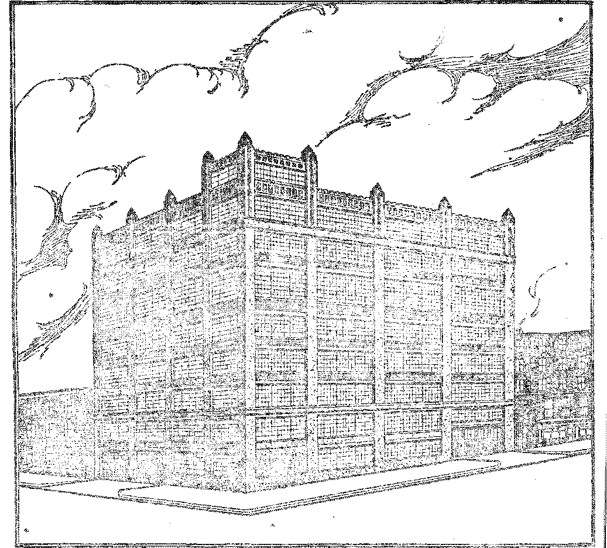

4r®:-'WWsEsfc Its News » . , . 4iSil41“114 -AsierlcaEWal Sent to Britain , . 1.1 . •<•. byl-Bad .GaHock in France and Gt.-irn . .
” tria . . , 1, IaA'.-:
Old Watc&brg GbeSebsiws : -Ofc:
£TnS®i®: Silent
Must Go ...
Poor in Mississippi
SOOTAX AKD El
Dance in England
T^v V. r ’Piinne 'mtata . .1 .-.
Eondoa Streets More Dangerous Than. Net"'Tot'k’s A British 'Spendthrift .. . . < ■ » - ■ G ■
"i , , ° E 1> h 7We » . . . . ■ - -
?1 V < a- C.w 4~~ Rubber Problem Settling Itself _ A World-Wide 'Copper .Trust • . . Germany’s liailroaci Telephone Germany’®' W’- U •> ?<> “ ’ . •
AVTOWOGBAraT (S AX OFFICE EaiSER
Sci3”t?E: AN i> Ji'. VENIiON ®ta s’n*ars ”of: :®adio: »* . . . ■ , . .
Chemical Value of Man Reduced ...... A Washable Wail Paper .........
’(‘RATED and Misoeleant
, Items Regarding Earthquakes . . ,. . • • ■ Extraordinary Diving Adventure ...... Bwctwicai. i"a OthuAtobmb .......
IteLiaiCN' akd Philosophy
:Iua Bbwabu os Obedibwcb
: From PsisOTf to na Thboi.e .....
A WowBSBron Man Who Was Neveb a l/rrm Bov Gittes Studies job Littmk Pbosdb: Oi’b F I’.uwsts Studies bs ’"Xh® Hasp of Goo”
Wishes every other Wednesday at 117 Aasss A-reer, Erwshsj WOODWORTH, HUMUW & MAKTDi
Y.
ijire
X?r;Sv:-9?.5^xSSo'nSA e
887 889
393 394 894
400
«90
330
390
320
391
392
396
392
393
324
394
401
887
393
387
897
403
403
412
414
T-_ 't
at,t, 35? s rab
BGJT'd a scfeswletigraeirt tor &
> j ri c " ex « *- 4 ■■
S lij 1 ” 1" ’ ' L ' - *- H ■>■ f ! * 'IL.,.-
zt —’ feg^zp-setedi to eeaww ©a wuM^s
Africa
®-s shsrsa Eaiesster Gate. Eoadss W.
....... 88-40 Irwin Avsaea, Toronto,. Ontario , s . , ■„ .. iSS CcIHsjs Street. MeRxmra^. AnstraH* ...... 8 Leila suoot, Cv»« Twa, South Aftfa
aS BwffiKsra, S, x. rafter fea Aot of Massfe 8. U7*
^m^x^gsggsror^ss—sgigwy•—taaiwiraaraA .Kfcssg^-’^aaETi^ss&aasss???^^
V«hn» VTI lyss, N. V., W«dBe*&y, Ka e& 23, 1927 JfamW 19®
The World and Its News
[Rttgfocast trom 8t& Ion WBBB ©a a ^r® te_gth of 436 4 meters hT the Ekbtor.}
fifi F&tvre of SSeidus
T THE fh’-rd armvrJ radio world’s fair, TPd'O fW'nUn<*®r rm-phesied rhrt in fiftv years airplanes, si ip* f»*»d trains wifi be controlled by radio c>o pen rectly that erv 3 vdl! rd "h* necessary : every m”n w,n wry in h^ wd ft his owr s-^ndrog ond receiving set: the is -n”L! W no dearth o+ , mar labor wiU to a thing of the part; drewve roill be d-'arr rol a'etirf tely; and motion p •■’hires wdl bn Iran emitted so accurately that a Finger or srtor C3r fjp ^clp j5eCT aad heard a* well as it actually nrecent even ibongo L> be thousands uf nnlefc ?w3y. Mr. Ccekaday also exneeto amomH's to b° equipped with -td and signal b’ghts, automatically contioiled by a central system.
coming in, and nothing can stop it The s?le cl radios is new twice that of all kinds of sporting goods.
CftmJccd Volue of Jfct? Reduced
YT USED to be said that a »nan consists of one pound oi solid n,alter wet up in seven pails A wate^ and that the approximate value of the solid mattpi is about $1.34. Now comes Itortoy Allan Ciayg, assocurte director of the Cc“ere oi Surgeons, r,nd tolls the American C^dz^c of Smgcima d’at the tuiaJ value is only s/3 cents. So we are each worth six cents less ibar we thoue.fi >e v-re. By end by, if this ps ' \ ”e «? p'i get down to wh. re we feel like lLAj
1£72 More Efxrth'iaake*
Futii.e^ 7...1 a tore zta E-rtA
(^haptss Km-LOGm the man vrt'h the Urd hire
s voice, swig into a maopboiu at 3a© F<an eiH?o ano put om n scnaibve U-m- in a stredio twelve m»Jps away. The feat wa- muMed ano eeeoKjpli'hed just as the scientists in charge of the experiment foretold. It is bebevod tba' th’» presages & ume when forest hies, and perhaps other umil agro non s, may be undei radio control. C«.tu.to Ubt J to entertain *u£ Limdt by ginging - l ne’e note at a delicate gleet gobtot until’t burst into fragments.
fatdto T^rrs Beys tocS la Form
ADr0is bm-ging the boys back to the farm.
That is ilie opinion of educators and o£
the fanners themselves. Farm boys are finding that t^eie is Ing money in the installation and supervision of radio apparatus among farmers and that they can enjoy at home much greater blessings than are obtainable in the city. Badio fs changing the whole world. The old order has got to go, and it ought to go. The new order is
DURING the year 1925 there were 1472 more earthquakes than during 1924. Perhaps then xuaj staxt the readei te wondering ho v many there wera »c 1925 ultogeLaer. There were 5.297. lie® is a little Det ter, ox a IrtJe worse, wh<eh-ever v<y yen please to call it, than one every two hours. The earth is surely getting into a icstlesg comfit on. itoe total for IS?6 has not yci toon uaiiouiic^d.
,U' itflng Drt-’ e>j C'pnBid F&zk
TN SOMT unknown w«v a wild deer got into *• Centml Park, in the heart of New York City, and for fb.. best part of a day led police officials, park keepers end other worthy citizens an excited chase. Finally it ha i the misfortune to get trapped in the areaway of a Fifth Avenu® mansion, and v-as captured and carted to ih® zoo. It may have wandered into the city during Hio night, or it may have escaped from a erat® in which it was being shipped. There is a possibility also that somebody may have released th* animal in the park to see what would happen.
88T
San Francisco’s Baby Concert
SAN FRANCISCO has been favored with a concert by four violinists, all babies of six years old or under. The youngest player, Blanche Herold, 23 months of age, rendered Hohman’s Evening Song. The older of the children rendered works by Liszt, Verdi, Gounod and Fritz Kreisler. The teacher was Miss Amelia Scheidarnann.
Extraordinary Diving Adventure
A NORFOLK, Virginia, diver has performed the extraordinary feat of walking five consecutive miles under water, from Hampton Roads to Norfolk, without coming to the surface. A launch accompanied him, supplied him with air, and directed his movements by tele-uhone. The diver complained of no difficulties except running afoul of an old anchor and ehmbing up and down the steep sides of ship channels.
H&is to Save $49
0 ENROLL your deceased friend in the Propagation of me Faith” office, 735 N.
State St., Chicago, Illinois, will cost you $1 if you mske him an annual member, while if you wish to make him a perpetual member it will cost you $50. The idea is that in either case you are supposed to get J5,000 masses per year, none of which do a particle of good to aimbody except the man v ho gets the $1 or the $50. So by sending only $1 you isve 449. If you do not rend anything at all you save the whole $50, and yen and year friend get the same p'-aet’cal reI v‘t«s
Withdrawls from the f'srfelt: CcaacH
fF ’VITHDB Fora the Noffiolk Cow
~ oil M C1 ir«*h'w J .H, V'-^r, m o€ the ^afay't e cii?n >' v?ch of *ht.r aty, sax’ L>1 cw
Norfolk Cx r 1 F fhuieras >•>-(■t doNnor a? toe Wml >1 Afi, u? :wi x '•?<’ ao>i .f-’-wfut al *-A g'rfo'P cf Cbr.'1 • *T>" cl s\ w j aj 'r”’ -utrd Jem8* Ch>--r mW • “W migdo’r , «<ct cs this worid: if mv ring’w w<h- < - - v >k‘ r''TTT’<r ny «»»«?• FIQHT.” (John 13-36) nhe f'-n^stcut teechffig of GoW Woid x» that a> 'V-iuos, have nothing to do wiffi r’ltwiog ffie >, or’<l% a/Wre The ’ole bubov^s of the ehv’ch of Je»vs Christ Is to “picsro. the nord”, to lift up Christ, to proclaim His gospel t@ earth’s remotest bounds—AND THAT IS ALT. ? jf the church had earnestly and faithfully kept to its bw mess ©f preaching Chnst instead of dabbling in the world’s mud-puddles: if the individual Christian had busied himself about his Master’s business, holding forth a consistent testimony to the saving and keeping power of the crucified, risen, living Chnst, we would not have the present terrible spectacle which now confronts us of a spiritually impotent church facing § world in the hour of its deepest need.
Strange Words from Babsm
oges W. Babsok, the famous statistician, ix?

an address in an Arlington Heights, Mass.$ ehurch. declared that the whole church service is honeycombed with hypocrisy, that the world’s banking system is adding to the world’s unhappiness, that the lawyers fasten for their existence on the misfortunes of other people, and that the educational institutions have gone materially mad, submerging the more W'orth-wliile courses m sheer commercialism. How strung® is truth!
Things Have Changed a Little
HINGS have changed a little. In the Bal th more Conference of the Methodist Church, which met in 1808, a resolution to condemn the traveling preachers who were engaged in the selling of intoxicating liquor failed of passage. A hundred years later the Methodist Church was the backbone of the Anti-Saloon League. Some Methodists must have changed their minds in the meantime.
3'7 Sects Trj to Amalgamate
JN NEW YORK CITY, on the night of Novem-t Ur .39+b. 200 clergymen, re pre sen ring -ighty-wven sc. ts, took the mitiol s+eps to _au $2.0.-
for the expense of a conf creme to do held Lausanne, Svutzerhnd. whew they woe to
>r q about r. ccosclidanuu oi churches. George "W W'flw'W.are, former xXtrorn^y Oierrd of
'’o IN-ib. 4 ‘ res, n« I cd aS chairman. diaries F. Hughes, ‘ormer Soewta y of StvtWof the Umted Sta+fcs. is chair nan o® the American Committee of the eonienmcc. One of the speak* er 3 at the conference was tkA Kight Reverend Charles If. Brent, Episcopal bishop of western New York,
Judge Collins’ Religious Statistics
Judge ColmnSj of the Juvenile Court, New York City, addressing a meeting of Roman Catholics in St Charles Borromeo Church, is reported to have said that of 145,000 eases brought- up each year in the Children’s Court; SO percent of them are Catholie, 30 percent are Jewish, and the remaining 10 percent are of other faiths; and this in a rify whose popular fem is only 25 percent Catholic. Judge CoUim is also reported as having said:
On the other side of the eonttnent, in San Frartefec®, I find a tabulation of the inmates oi the State prison: 75 percent of them are from Catholic schools, brought up in the Catholic faith, yet Catholics have less than 80 percent of the population of California.
iittewte to Discredit the Ress-rnetion
Occasionally we learr of attempts to discredit the resurrection of our Lord. A roan place? himself under a s^I-snflieted hypnotic grell, h put into a coffin i« burred; and after Iwo ho are the eotnn is dug on. and the cataleptic spell is iunnvfd. Meantime, the paneni bar been breaking slightly what aL there was w th? box at the tame he was buried. There ir nothing in this that remoleiy resemble* th» actual death and resurreetxon of our Lord.
Hosse Moving Extraordimry
A BOSTON capitalist moved his summer home from Marquette, Michigan, to somewhere down in Massachusetts; and that was quite a move. But an Indias Maharajah has made a bigger move still lie had a palace built ia England and then shipped complete to India, where it is now being reconstructed. The b*»th entirely of marble, cost $10,000 The furshare inclnaesa silver bedstead. All toe wealth A India goes to its ndeis, i ot to the common people, uho are ah. ays in dire orabl? conchaon.
American FTais Hindus
FfWZ Bengal Board of Censors claims that
America * bhas are malrii'g the Hredire ic* -less. Ii seems ihartbo Uinuiw uk uiehlwrs, red the Bxitish Board o’ Censors nuA the elaborate portrayal of Western luxury and extravagaivi, and the raermers and morals cP our men and women, are causing die Hindus to think that we are actually as had as we really are; anl ft 8©@g not just suit to have them know it Moreover^ they are said to be getting the idea that the Bast has been exploited by the West in order to indulge this extravagance; and that is the too.
Hollywood Film in Jav®
A N ENGLISH writer, Mr. Huxley, rererife A-L ing in The BookmM one of Hollywood’s most beastly productions, which he saw in Gambier Park, Java, says:
Standing in the midst of that silent crowd ef fare're ®se picture fans I was astonished, when the performgno® attained its culminating imbecility, that they did not all with one accord tarn @n us with hoots of derision, with mocking and murderous violence. I was astonished that they did not all rash m a body through the town erymg, “Why should we be ruled any longer by imbeciles?" and murdering every white wan. they met The- driveling nonsense than flickered there in the darkue®, under the gropicai clouds, was euoiy i to justify any wtburato
Jj? Odd Radio Receiving Apparatm
Dispatches report that in th© city of ToroiM, ir a fionst’s shop in which there is no radio apparatus, by sw «trarge freak the watu tap automatically acts «.s a redio rre ©river and the metai sink acts a* a loco, speaker. As a result, it is declared, speedres and hvqsm can be plainly heard. Should this heeome general it may lead to an—at prreei t unexpected rush of al members of the £?srily to take part in the dish-washing act.
American C&al Sent to Britain
’DEOPLE with hearts, who knew of the desperately poor wages paid to British minere, and the desperate fight die miners'made to prevent tie already ixopossibly low v ages From being made lower still, find little Eatifcfaition in the news that all last year the coal Larons of the great and wealthy Uni ed S<atci, sent millions of tons of bitxovinons evd re ’Ire British ’’sle% during the strike Hat beg" i 'n 3 jv. Uncer the eiicuwstanecs. Pip xr’revs ri 1 i'and little chance of winning; *, u <t he®rip cue io know 'slat tire wosKire of Aassia, Gfci.nny, .’rane-e, Irrlj, Sweden, Norway, Denmark. Bolland, Spain, Portugal. Poland, United Surin-, Australia, Canada and South Africa have all don® what they could to feed their British brothers
FTWIS past is revealed by the fact that it took a letter five months to go from a remote pan of British America to another. AH the andent modes of travel, which of necessity axe still wed in parts of that great country, were employed in making the delivery. But the pres ent is revealed in the fact that the letter was . written to a broadcasting station in Vancouver, to tell that the program which they had been brosdeastaig had just been, received. That is abou it. In the past it took five months to da aojtliihg; in the present, with modem apparatus, it takes almost no time at all.
Ti 2 Answer of £he Allied Prime 3/linlsiers rprr complete answer to the lies abo» t tb*» up ted States government and people m fj\J; circulating througnout Europe is to ne found in tap cab'e dispatch seat on June 2n<t 1918, by *he prime cum^t'-r® Engh^cL Fre'ice and Italy to President Wilson, in which they gaid:
The prim® Hiafeta of France, Italy sad Vreat Bntdin, now westing at Vereaihes, desire to isend ths fallowing mesfeags to the Presfent of the United States: We desire to express oar warmess, thanks to President Wilson for the remarkable promptness wrt-h which Araw-lean aid. m excess of what at one tane seemed praetor Bable, has been rendered to the AEb.es during the past teonth. to meet a great emtogercy.
The same dispatch emteined a fre'fh appeal for more troops. They want, by the feto«ra3, expecting nofereg to rerera but feta. Tito they did not get own toe tham s.
A" GriOdF ex B a h timbers, &em«g fa fe to fsfero JA s of A Lraoro re to.ro-’ to. ’.s v i,«o ’ ■? tomtomra a«i' to l>i. era a outrou. 4 v t.' evo u-gi „ oe r> ive fe o \-tion o’ mimm. >o. -Ofe 4 rife tioo ii»Vw fe ‘j- ^Lho; A h~tnai ” toudily uni toe ee^-cvcuw t a' ‘’herty. ”rd th?? fey ifc cfeottoamiiu rtoiaogfe *< undo’-gaines verpest s oi the rmLrv i t to torra Uto afe Ait ttttwm kt®. It euggesxfe ffet vnra gov-©rmnetos have to depend for rap pot*, ®in the wluatasy wnmt of their peoples, they mwf Www&rily exerds® mutton in their foreign grifete*,
Unique fefei Dawe to England
TpXPEBIMENTING* with, specially ineonspic* was receiving sets, fastened to the head? twenty couples staged a dance at a hotel in Berk-hamstead, England. The appearance of the dancers, keeping perfect- time with each other’s steps without any audible music-, is said to have been, most extraordinary. To the onlookers, they seemed to be out of their minds. This is a good example of how the true Christians appear to those who have no ear to hear, or who, having ears, are not yet. timed in.
ifonfef Psrf&rma.mre Started Too Soon
FTAV e g-otto deal of hard work a London emertaroer trained thirteen monkeys to r. oy jaw. Ko drato they plaved it as well as most ordrestias can play anything that is not mnac, bat- they were not to begin public pets-Sorwanes until Christmas. A month ahead of time rb'ws broke into what they thought way a henhouse, when out earn® the monkeys and scattered themselves all over London. At last accounts the bandmaster and thro® others were still at large.
Mew T&rk Lemming fmm L&ndm
LONDON is replacing its slums by rapidly housmg ad the residents of certain quarters in temporary buildings while it tears down the old rtrueturos. replaces them with modems honsss, ?nd -bra the ©Id tenants pre brccigM lack m and allowed to -pay as rent not a fixed Bum of so 'feb ret room but a certain propor* ti’toi of *.io'? ran * of the family. Adgnst Ilefe 'a/, wo' di >10w,JQ0s000 in hu» ci » fe want! o rrr <iu pL ” out iu fe-w fta k. C»*y wwi relieve tvecy i estige of the great F-»s' S de, w to g d ov- ’ j do a nybafefe feroro’ Yors <?rr^«* rx' i ?w '-or/
" «jN IjN <ir-ecs tra u.<fe’f
-gam s’ cfegerorw ,jc Wr--ra? to fev
■' o 'k Llfeoufe fere rtife'a fc fl-ummfefe to fend* i few ju few Tc~k, fe 11 q. f •3e*» ifecy fefeu fe British metioyri’S a m A vofe to fev, feyfc -fey aVi.rag^. tore 2LA The difere ,c.» la largely due, rre> doab*, to ths Lord.,a toga Perhaps M.e of the difference is traceable to the fart that there are mor® >w drivers in London than in New York.
Bwetev Ssdter Sla&ee ny Psrifeweaf
A MEMBER of ths British Parliament, Doo ' tm rid -ji M Bemondtey. in a pal-lie speech io a k ri’: / Aw' Temfateti t-M ‘I that drunkenness in the House of Parliament was ct-mmo-j rte wbtei-. cc oil parties coming ua noisy, excited, and Snshod with too much drink. In a*'l.nin s : : 'ii IT < re brf.i gh* • ’ j to book for th?- speech. He could have been expelled and .cot • , >-> Vb hevc, in his seat and
2«jvEcd ?■' .A*- o-u'k o word, o th" ground that every person pi esent. in the then parked House faevri w > 'el y'fic rvuti. fite. Trium lute's." -r' -I,, whlly v utte-d th truth of the ae-.it? . ,rid riwte tlte 'h’t talk about te T-■ TT tee wl'mcfy vo'’ *. tite <■- i
’ ’ ’ . ’ -■ < > ■> k S” te i x ' te £ ’I . that was ail they did. Tins is the nrst tmw in the history of the British Paxlianiem that when a -J „s _o£
privilege lie has ever had. the courage to stand
W _ ■ A. . W ’ - (. w
’ - ’ w]ien everybody knew
he was right. How can . c ' be
expected unless the legislators have the courage to tell the truth though the heavens fall I
A British Spendthrift
A BRITISH spendthrift, left $5,000,OGO by his father, has been twice forced into bank* ruptey. The .court made him an allowance of 1100,000 a year upon which to live. He recently eame into court claiming that he could not live on that .amount.. One. wonders how he would, like to trade'places with the British miners who •:ean never expect to receive as much-as one per-eent of- that amount. How can such a man have -■Ray sympathy for eenimoii men! Of what pos-rible use -is he in the world t
fa.
"FT »,L B. ish ■<: t” e r>»'T T”dum has t J .ialready started are conf ranted now with the •ihefattai fa England fast .suianier even native-faw a pij U5XA tete of trim, appeared in. public criupi ?w vests m. To b- sure they wore doubfa-t-reasted scats, bu> toned tigfaly, so that nobody would see their suspenders; but who can doubt that, the millennium is here when a male Britisher dares pass through a stifling hot day without being closely girdled with a vest !
Bfaae® Drop Off Airship
AT FULHAM, England, in October, a giank X3-- rizship wen alri t tefate two ahfarics, eteh tewj.r;m< r w ' aw ■ v'n^mg Hong h tee ,. !r. / /"fa _e-t. the a.w planes ten. rfi " a’ <w U m ► otwi, and it " 1! ! > 1 -v -te ’ r wl t< H®
gv q - -6 y i . ' a . hc rip ' n=s have ever been released., from Zeppelinfa! The im» mediate uses of- this combination in ease of war are readily apparent,
Britefari New Bombing Planes
"DBTTAIK is bad .ng fifiy r.-w fcoinfang •*«* planes hi4 V ri/e ? tete- m one hundred mifaj s-- h 'i ,_U Ie fak to bomb a
city from four niiles above the earth, wliieh -is? practically out of sight. It is said, of comse, that these are for defense. That is what is said of ail military apparatus, but the statement is illogical on the face of it. The planes are for oftense. There would be no occasion to drop British bombs on any British city.
ri Beal Good Fish Story
BEAL good fish story comes to us from the London. Daffy News. A fish, spherical in shape, sen J>‘- ;te a sunfish, came crashing over the rail of the United States steamer “Bepublic” while the latter was in mid-ocean.. The fish, thrown on the deck of the boat by a great storm, weighed eight hundred pounds. The News carries a. picture of the fish, evidently . taken while the storm was still on. The four heavy iron bars or tubes which, r m t; ute the ^Republic’s” ship rail were ah, borne to the deck .Where the fish came through.
Ti^pwt^ System Killing itself
TN -EUBOPE the. tipping system is idliirg ft-A self. Tn Germany it is now the custom for the house' to add the waiter’s usual 10% tip to the bill'itself. The custom has spread .to Holland; -and the waiters'are in favor of it, .because, for a long time, Waiters there, have not been per- ■ miffed to keep their tips but. are required, to-,, surrender them to the house. The tipping sys« ' tern is ugly, vicious ond moan; it ought to bej aholwhed altogriner and the waiters paid a respectable wage. ” I , ......'........
Tipping a Degrading Practice
T) ECOGNIZING that tipping is a degrading practice, unfair in principle and unsatisfactory in its outworkings both on the giver and on the recipient, a body of British railwaymen has passed a resolution condemning the whole practice and urging the passage of a bill by Parliament making the giving and receiving of tips illegal.
The Heligwm Police
George Bernard Shaw, in the preface to “Major Barbara”, said:
The religious bodies, as almoners of the rich, become a sort of auxiliary police, fating off the insurrectionary edge of poverty with coals and blankets, bread and treacle, and soothing and cheenng the victims with hopes of nrmen^e and mexpensne happiness in another world, when the process of working them to premature death in the service of the rich is complete in this.
Most &f Them Kept Their Jobs
THIRTY-SIX years alter Henyy VIII founded the Episcopal Church, Pope Pius V excommunicated Queen Elizabeth and all who adhered to the Church of England: but out of 9,400 Boman priests who had served under papal authority during those thirty-six years, or part of that period, only 192 refused to take the oath of allegiance to the Church of England when the test really came. Ninety-eight percent of them thought it better to keep their jobs than to fall out with the powers that be.
TForlcfs Forests About Exhausted
THE British Imperial Forestry Conference has submitted a report showing rhrt the forests of the world are nearing exhaustion. Only tv enty-seven peroert of the virgin forests of Ga lada now mucin standing. Tn the United State* there is row left but twenty-fito years sup p] j, and that is ir rat€ 1 mostly <n three states. C-werete corstrc'’ io j did not, come any too wro. Co*-adoration row being paid to the "id tort on U j livt’’ Lmiorns ,-f Michigan river-; th.-r* an- new wohrolroerou ry five million feet of good timber which Las lain tnere for c generation. It i‘2 believed Jiat du. n? » evrly be covered; but it belongs, theorcticaUv, to many owners. Rone of the co nparies which cut thfs timber in the first place, awl put their mark tjon it, have long since ceased, to exist.
Rubber Problem Settling Itself
TOE rubber problem is gradually settling if.
self. In two years the British share of th© world’s total production of plantation rabbei dropped from 72% to 53%; American automobile users reduced their consumption of tires 25% and the amount of reclaimed rubber has almost doubled. America is also getting some robber plantations of her own under way.
Firestone Rubber Plantation
THE Liberian government having grantee!
VW,000 acres to The Firestm-ip Gmipany, that Akron, Ohio, concern will at once begin the development of the land. It is estimated that this development will require the services of about 350.000 native laborers and will produce 200,000 tuns of rubber annually. The company has also leased another plot of 200,000 acrou which is now in full rubber production.
Growth of Spirthm in London
SOME idea of the growth of spiritism in Cen
don may be formed from the fact that a year ago a hall which seats two thousand persons was sufficient for their annual convention. Tn No-vemher of 1926 they had eight thousand persons out at a meeting in Royal Albert Hall, three thousand of vhom arose to testify that they had been m touch with their dead. Poor things! Little do they realize that they have lice^ trapped by demons who have wickedly impersonated their loved ones, only to deceive them ami keep them away from the troth.
Bishops Fiftp y®@rs Late
MANY of err subscribers are seadmg as
"L'ppings calling attention to the Jtc’ara-f,<m of emc-rir b'sloos of the Gharri of Fn-g’auU tf-at ael1. a> a place oi ron-us, be acolisbcd Bu' cor an&wcz is that div 'rsaops are net to congratulated. Pniy roam is a
tine io :c< a sane, bones. pf»?
wro fn ily fixed tn tno mtou. The b ri ut. coa’d aave had this tdm fifty yearo ego if tiioy bad teeii robing to Tck up just fc’ir words in the conccro’mros every educated '’aim tier has in his ^’brory. It must be that the bishops are Ake tb<» vest ei humanity. They do not like to study, *hey de not like to work, ard they do uof like to think. Thinking takes effort. Woodrow Wilson said one time that the thing that impressed him most in the effort to instruct young men was the effort the young men themselves would make to prevent the reception of knowledge. The bishops are in the same class. They are coming along, but coming very slowly, fifty years behind the times. Hell was abolished long ago.
Speeding the Growth of Oiefcs
IN NEWPORT, England, ultra-violet rays art used in speeding up the growth of chickens.
Young chicks treated to these rays at intervals during the day and night become twice as heavy as their comrades not so treated. It has long been known in this country that it pays to illuminate chicken houses by electricity, turning ©n the current long before the sun comes up. The .increased light and the diffusion of the electricity both tend to increase egg production.
Censorships in Europe
Tv THE United States we feel free to print the truth on all subjects, if we have the courage to do it. In Russia, Italy, Spain and Portugal there is an absolute censorship. In Turkey, Rumania, Greece, Hungary, Poland, France and Belgium you must be careful what you write or you are liable to be thrown into jail or expelled irom the country. The only places in Europe where there is any semblance of freedom of the press are England, Holland, Norway, Sweden, Denmark, Germany, Austria and Switzerland.
The Mysterious Manifesto
THE mysterious manifesto, signed by most of the leading bankers of tLt world, including American bankers, calling for the removal of tariff and other artificial hprUers to trade threnghord. Europe, reems r© be without say legitimate p-rentage. It w. vf-aed to the Louden press through on adve" ’rij g agency. Ber-l4n dinpohehe- 'iisnri it i as rere,'‘V'ri in London >y the bead of ’he hn.k of Fngt’un; hut lung before it was pvbhcbjd it ha I hren examined and approved by the Americai- 'decretory of the Treasury, the President of fee United States, the British Chancellor of the Exchequer, the President of the German Reichbank, etc.
Lending Money to Fay DeBfe
IT IS well known that Germany is meeting her reparation payments, and also that America is lending Germany the money with which to pay them. It is generally agreed among financiers that in. 1928-1929, when the annual payment under the Dawes plan materially increases, Germany will be forced to default; and some maintain that the crash must come next spring. In the meantime most of the material things in Germany that are worth while are passing into the hands of American financiers.
Bad Outlook in France and Germany
COMMERCE AND FINANCE contains an article by James E. Boyle, professor of Rural Economy, at Cornell, in which Mr. Boyl® says that Berlin has over half a million persons either wholly or partly idle, and that in France the rank and file of state employes earn only fifty cents a day, which is not enough for them to Jive on. -
A World-Wide Copper Trust
THE copper business of the world is now under the absolute control of a combine which maintains offices in New York and Brussels and cannot be reached by any national laws. This world-wide copper trust will fix the world prices for copper, produce what copper it sees fit, and eliminate all forms of competition. It is a super-government in copper.
The Twa Giants of Steel
THE new European steel eonibine has fixed its annual output at 27,528,000 tors. Thto is about three-fourths of the output of American makers. In the next few’ years these two giants are expected to put up a Beautiful batti© to see which will control the steel trade of South America.
A Washable Wxll /toys’
fniJE 0er>W8 uave invented e robbewecl -** waseaMe wto ct Ito papm is stud io «ook Eke wa(l paper, rot like Eaueozn or oil* cloth. This seems uke a derivable invention. Wall auiiae'-'S scon gri . rngy nowadays,* with so much oil Find dust in *he au, and if a really good washable wall paper has been invented it ought to have a large sale.
Genyantfsi Railroad Telephones
AT PBESENT it is possible to telephone from a German dining car to any point in the German republic fot less than a dollar. The ears are totted with telephone booth, from which ©alls are made in the usual way. The service is said to be perfect It would seem that *f this is possible in Germany it ought to be possible In the United States.
Germany’s New Auto Speedway
IN CIRCULAR form about s ®)Wxm top, to the county of Adenau. Germany, there la? recently been constructed the most rtmeckalie automobile speedway in exsMen.cc?. There are four rings or circuits about the moiint-uin., at <different elevations, and varying in length from one and one-fourth to epluecr. mho.- long. A grand-stand, favorably situated, provides loom for 10.000 spectators. The competing ears fan be observed readily throughout much of their routes.
Working Over Old Slug
THE French are elated because they. Lave discovered thousands of tons of old B-oman glag, worthless in its day, but now found to be 60% iron and a very valuable deposit A generation ago the slag from our own furnaces was considered valueless. Now it is of great value in the manufacture of cement. No doubi, as time goes on, it will be found that much less ha& actually' been wasted in the world than we have supposed. It would seem that sin to all ite fonnM is the greatest of all wastes, but if Tw. les'rmx which it teaches are well learned this particular form of slag will constitute a mint’ that will last mankind to all eternity, as an everlasting lesson to obedience.
Men Clamor for Freedom
THE worm, is turning. Gradually those afflicted members of the human family, the men, are beginning to realise that their mode of dress is a worse than stupid and heathenish abomination. In Paris there is now a dub which has set for itself the worthy ideal of doing away with two of the most beastly articles of the male attire, namely collars and ties. In his timid, shrinking, fearful heart of hearts every man on garth will wish them well—and then go and buy, another box of chokers.
The First Sound
NO DOUBT the lighthouse will always be valuable, but the hist of what will come to be very common the world over to the way of sound houses has been estabLslud st the entrance to the haibor of Calais, Ftan.ee. Th® sound house revolves three times a mtoaxe9 throwing out wireless signals and ulixa-sound rays. All that the navigator has to do is to count, the seconds after the wireless signal until the sound-ray is he%rd, and it is then possible for him to dctermtoi bis position within a few yards. This will en&ole ve«3-»lc tc enter ci leave the port of Calais in the thickest fogs.
Unemployment in Austria
A T PBESENT there are about 200,990 nn-•*■ * employed in what is now the small comn *7 of Austria, A glimpse at bow this affects the populace is had in. the fact that when the government recent1? added 3.290 to its raaa1! fai'? of soldiers lOfoff yourng men sought the jobs, and many of them remained in line all right watting tbei? opportunity to bo early on the scene wnen the xecrmcing ofaet& shoula open.
GM Watchers M Go
T’T IP the fates that old watchm must go For * centuries a lonely watchman ca a 1T;~-rmg tower ha* signaled by lantern or otiv»mvi*e to thoto below whenever a lire broke ont nea- him. Now at last be nau iost his job. because G baa bean found that the work, can be n»o,e effiritotiy dmto by ncodem <*Jectne^ Hgnsltog sppwr'ir*, Noah’s if ovex, the prophets of ofo hi vs. eeased to give their warnings, ths vc-ieo of the apostles is stilled, Gja messengers to foa different ages of the church had their day and are done; and soon ae wo shall cease. But th** da? is drawing on; >®d soon no watchers for ifo dawning will >>e needed, for it will be here in al* its grandeur and. glory B
Conditions in Russia
BEFORE the World Wmety percent of the Russian population was illiterate; cow all the younger generation can read and write. It is said that there are now 100,000 contributors or correspondents to the newspapers and othet gerio dicals published in Russia.
Fhssian: Royalty in the Discard
/-tpHE'Soviet government shows 'Scant respect
-*• for tyrants that made the name of Russia
|*tefiifit|ii |||ip||ia.n&'&e < ©reah'Bas-;hs|i| ll*||liii*Bi|iikiMealer * whA:wffl < ® ® It < $ dr *-lhiiliing-; the ancient*■ prisonf '--pf* - Saints is nsed-:*as a pfflsewn to**relnipd
Russians of the fate that was once reserved in Russia for those who dared to think except as they ware reqxnred. ■ o*** ■
'American Venus Russian Wheat Gnmn
ALTHOUGH the average American farmer . is 1,000 to 1,500 miles back from the ocean, and an ocean 3,000 miles wide separates him from his European market for wheat, yet he ra rjT<-_s <••; gji kl.35 per bushel for his wheat while the Russian farmer, under a 'government, ’nceomtly, gees bat 90 cents per basket ■-■ More......pveEyMe American farmer averages twelve tons
<1 vheat per worker, while the Russian fanner averages but one and one-half tons. All these differences are accounted for by the wider use of machinery in America than in. other countries.
Cooperation AcMe&ed in Finland
IN FINLAND it may almost be saidtthat* eo» -operation has-won-& final battle. The-eoop": . eratives now pra-hp.te 915% of all the butter, produced in the country, and dominate both, the home and export markets for milk and milk-
’odwris. Coopr cotton has made the fanners rao. eirv'; and m-w^'~deid. Today about 92%
: of the arable land: of Finland is held in farms of J.ess than 250' acres.
2 *» • ri „ «<, in Spain
■*|pBOM time immemorial the country of Spain A. has keen under the control of the Roman v ' ir, n ’* ide ~t~, ’ i L
even at the present .'time only one-tenth of the c » t. > x' । ed by law to
■: attendysehool:t«an: be aeeommodated, because jwe uu v'era '”4 Ji . ?-r j, Trad.
The..people* have suddenly awakened to the fact ~ „> -ignorance, and an
mwix dewavd s ntbtmg c . kuu ' -hoofe. Even the universities are unable to accommodate half th.® students who now wish to attend.
Latest Moves of ike Hestless One
Mussolini has decreed a tax on all bachelors between Twenty-five and sixty-five years age, the ftrndsTo- go-for the protection of mates?-* hity and infancy. He has guaranteed the inde--pendenee* of - Albania, stationed troops on the border be tween France and Italy, and is declared by the Chicago Tribune to have notified the British and French foreign offices that unless -France surrenders the Syrian mandate before March Italy-will withdraw from the .League of Nations. The time is up and we wait to see.
IwfeA Opinion of Fascism - ,
JUSTICE, ..a magazine published by the- Gar-• meat Workers Union, says of Faseism;
In Italy labor-organizationg axe outlawed. They art supplanted by Fascist trade unions, led by 'Fascist mmionettes who dance as the strings are pulled by castor-oil heroes. The eight-hour day has been destroyed, woman suffrage has practically met the same fate; and Jxeedom of the press, speech and assembly are relegated to the past. ,
Fascisti at Work Here
WHB Fascist! ar® -at work here-<in, America.
Last November hands of armed men invaded the printing plra'-s of the Italian newspapers 11 Nuovo Mwido and. drove
ithe employes into the* street ati-the 'point of tlia-* gun, and then with sledgehammers- and' wrenches;' wrecked both -plants.-'' Probably* Won we shall* have the blessings :of Fascists, rale all about "us.-Those who like it will probably get all they wsmf of it before they are through with it. *
The Crime of Anti-Fascism
TO BACK up its career of official anarchy ths h . " > ‘ o . .<i i i
’ 3T 41 - - V 11 l.i • । 1 - ro ■
a man to banishment- tori lojjelysisle* if . ha s®** much as manifests any * epyesifwfi*-*% file* gov«*i or.’- " ’ - ... ....
rales in Italy. The plain intent is to fasten this y-ra' -s-raratti'c, _ nt 'ra„rai
tl-c ’M’ra >< p'*' tl' 1 nr -ray % S’'-ope w-‘l open. Orders have beeniseutd for '«he kc. of all anti-Fascist societies and newpaperg.* Mussolini has issued orders attempting to date- women’s dress, both as to style and eosfc
EFOEE this bras of Th® Goisew Age is. in the hands of Its subiserifiers we expect to be folly settled in our new home at 117 Adams Street,
|iig|Neeai coMtrueted by >the
Tract Society. This is an
97 Yz ft-? contains -more than '^O®Ws--8sB0i^^^ space, and has an abundance of light on fell Sidm.
Brooklyn. Below is a picture of the building, which has
The building is constructed ef reinforced concrete '1 > A • < v y fireproof. Experts declare it
Ito be one of the most ideal plants in the eountry, and it •Is especially adapted to #ie use fox which it is intended. "i *' : i J occupied by the Watch Tower Bible and :h ' c s "r., and by Te« Golbkn Age, « printing s®pd bookbinding eetablishaisat, and is on.® of ’tow New Xorfc factories that, ig eynippod to generate fe «w* rieotrie paws..
Tu > * s w i. c r i: "... -
remainder {" s.® 1 , ' ' x> c 'V -
shipping of printed matter-. The printing psfisse® installed <in the sixth fioor.. This fioes has a foot ceiling, and is ™i v n \
‘Th® fkwg use served by both, freight n 1 r ~
wtera. The entire eguipaieaf fe d--'gnOi w eAenr \ rfaMfhwte, .. , f fif-'Ti
THE earth, experiences 16,000,000 thunderstorms a year, or about 44,000 daily, so that there are about 1,800 in progress at all times. Java gets the most thunder-storms of any place on earth. The Arctic regions rarely have any. In the United States, Florida and the Mississippi Valley have the most thunder-storms, averaging thirty-five to forty a year. In California and Arizona they have but one or two in a year.
Every thunder-storm and rain-storm starts with dust in the air. If there were no dust there would be no storm. On some tiny particle of dust there is a precipitation of moisture. Millions of these droplets often unite to form one of our common rain-drops, but every rain-drop has at least one dust particle as its nucleus. These dust specks may be microscopic in size, and usually are, although rain-water sometimes actually appears muddy.
There is always an immense quantity of water overhead. When the sky is blue the water is invisible, but the moisture-laden atmosphere is there just the same. If all the water that is suspended over our heads at this minute were to fall to the earth at one time not a living creature on the surface of the earth would survive.
One inch of rainfall brings down 113 tons of water on an acre of ground. At the time of the Dayton flood twelve inches of rain fell in one night. In some places in India the annual rainfall is over four hundred inches. London has twenty-five inches of rain a year, Minneapolis has twenty-nine. Rain is caused by a warm body of air getting dulled and unable to carry its load. Then it cornier ses around the ever-present du°t partieKs which permeate our atmosphere and forms drops.
Tliunder-stnnns O'wur vhea a layer of hot ait nex it the "mill suddenly bursts through a of 'rid sir riwe h and starts tc n&e far a mm the erixL. The top gets suddenly "old.
mhi *aPs the big drops ■ •any 'loutirc ekeme*? to the earth. T'-'s won results m < p -rrfi and a negative s .y, urmlaria-m ri bg’ h mg equalizes mauers.
The power of a Vgfetoing flem may bt judged from the fact that it trims 1.5,003 vohs pressure to piodueo a spark an inch long, Lm flashes of lightning have been know tc leap from cloud to cloud a distance of twenty miles. The utmost length, of flash, produced by human beings is said to be about twenty feet, in the General Electric Company’s high voltage laboratory at Pittsfield, Massachusetts.
Lightning and Hail
HEET lightning, so-called, is merely the reflection of lightning flashes which are otherwise concealed. The usual form of lightning is what is called chain lightning, sometimes known as bolt lightning. The zigzagging is caused by sudden condensation of the air in the path of the bolt. A third form of lightning consists of fiery balls or globes, possibly of air or moisture, lighted by electricity. These sometimes attach themselves to mastheads or roll along the surface of the earth and explode without effect. The thunder-clap is caused by the tom surfaces of the atmosphere rushing together after the lightning has severed them. The roll of thunder is the echo from cloud to cloud.
For some reason unknown the oak is fiftyseven times as liable to be struck by lightning as the beech. Trees struck by lightning are almost always isolated in the middle of fields, or are on the edges of woods. In a great thunderstorm the middle of a forest is a safe place.
Lightning rods have been generally discredited. Insurance companies, with, unusual opportunities to make studies of this kind, assert that most lightning rods really invite lightning. The statement is made that an ideal protection would be a heavy wire netting, or broad strips of metal, as hghtning never passes through & metal covering or leaves a conductor for s build irg if the conductor has surface enough to carry the cm rent.
l~h k'ones a-e caused by rain drops getting par* ay io earth, becoming frozen «uid then bemg lO’-cec aloft again and agan , Suiu--r mes until die) are lt;g< enough to break nator-melous wide open da Ju otbei tmiou’s dame go lrad‘loriuc }«rv Ker kRO’wi io Linm aovn a r-'’ . mrive me *s at r. time This 1 opened xn » ..e t'lKaiiont mg.ou c.f Xorih Carolina cm one cw-iwii.
West m Kaneto is occdrion flly visited by ►.••.pineal stoinj whitri coms when the air is m~ tem jS-L dxy, ad itLout any thunder o* hrbi-juvg. Bribed ftiie te-ices become so heavily charged with electricity that at night every barb becomes an incandescent light. A wire thw charged, if it gets loos®, kills all the vegetation within the are in which it swings.
Farwws Kinds &f Whirlwinds
IF WE understand the matter correctly, a thunder-storm travels along over the earth much as a lawn-mower does. The wind always blows ahead of it and straight sway from it. In the case of a tornado the storm moves ahead like a spinning top; its path is narrow', and it may and often does jump or bound or skip.
A cyclone may be a hundred or more miles in diameter; its general direction is spiral; as it passes over a district the winds shift so that they seem to come from every point of the compass. The center of it is a place of calm, -without wind or storm. The damage is done when the outer rim of the great wheel sweeps through, both ahead of and behind the center itself. Cyclones in the Atlantic are called hurricanes; in the Pacific they are called typhoons. The so-called western cyclone is properly not a eyeion® but a tornado.
Tornadoes usually travel from the southwest to the northeast. Their path is never wide, but the funnel when formed never travels less than forty miles an hour, and often sixty; so it is hopeless to try to outrun it. When caught in the path of one, the safest thing to do is to get into the southwest corner of the cellar of a frame building, crouching close to the wall. Or one may inn. to the northwest and sidestep the worst of the storm. If caiighl directly in the path and there is no escape, throw yourself flat cm the ground, preferably in a ditch.
The reason why tornadoes move from the southwest to the northeast is because that is the line of conflict between the southward moving cold winds of the Rocky Mountain region and the? northward moving hot winds of the Gulf Region. The tornado line is the line of greatest friction between the two air currents. The state of Arkansas is the greatest tornado state. March, April and May are the banner tornado months.
Some Freaks of Tornadoes
ORNADOES have been known to drive a fence-board through the heart of a tree a foot in diameter, and to drive straws through fence-boards. They have been known to bite great chunks out of a building and no one could ever find a trace of the missing material. It is no wonder the ancients used to think a severe windstorm was some kind of great monster.
A large oak tree was twisted from its roots as if it had been a weed. A half-down glass jars of fruit were "carried three hundred feet and laid down without the least damage. A earload of budding stone was tossed around like a toy balloon. A boy was blown out of a house and a few seconds later was blown back into it
A letter was picked up from a mail box and delivered by air a hundred miles away, but not at the correct destination. A garage was blown to smithereens, but the automobile within^it was undamaged. Houses were iolded up I’ke cardboard boxes; others were picked up in the air and their contents shaken out like salt oru of a shaker. Birds were thrown to the earth with such vjobmee that it killed them.
Things happen so fast in a tornado that sufferers lose all sense of time. In the town of Wilmette, Illinois, a tornado winch some citizens claimed lasted one hour was proven to Lev*, lasted hut one minute. A rescue worker. noticing a baby’s shoe protruding from the debris of a miner’s home, after a tornado had passed through the village, grasped it and. found under the wreckage a little girl, who was ui-bnrt.
Buildings in the paths of tornadoes frequently explode. The reason for this is tbal ths ordinary pressure of air is almost a ton to the square foot; but when this pressure of sir is suddenly removed by the suction effect of s tornado moving along the outside of the hudjatg, the pressure from the inside blows the budding apart.
Other Storms
OT al J bi g wind-storms are tornadoes. Sheer wind alone takes a heavy toll oi life and property. Such winds are not wiconimon in the North and East, which also have their share of blizzards. In August, 1926, a heavy wind-storm in the vicinity of New York demolished thirty-five houses at Glen Cove and Sea Cliff. In a storm in Wales five railway coaches were blow® over an embankment, but fortunately no one was in them at the time.
A waterspout is merely a tornado at sm> These storms are usually much less violent than
similar storms on land, but are dangerous enough. Waterspouts have been known to chase a ship for half an hour, seemingly drawn along by the rapid movement of the ship itself. The upper part of a waterspout is From the land, the ■fewr -'part from the deeah.;'The Sahara Desert shg> tornadoes wfeieh < tatar, the form of sandspouts instead of waterspouts. y •
John Baskin the following interesting dejmption of a sterm at sen:
The water from its prolonged agitation is beaten not cr-anlay fc ,'d, id > '■>" ‘H of accumulated yc.‘t. -di'*1’ t"ug a” i<ycc wd a1 > Ow vavs to wavy, and where one evils over to break, form a festoon .life.« dopery tom itwMge; these are taken up by the -jj-l. n't in d..-krill 3 , i. Mr, il w nhife,
hanging, coiling masses, which make the air white and ■thick asewith snow, only the flakes are & toot or two ,l®ng esali; th.e .surges theniselses are ..full of foam, in their very bodies, underneath, making them white all । through,,, as the;water Is under a. great cataract; and ,'r>-jw t»a>”e9, being thus half water and half air, are torn to pieces by the wind whenever they rise, sad sfpa carried sway in roaring smoke, which chokes and bCi a ogles b’ke an.'3i wai-er. : ■
Add to this, that when the air has been exhausted of
v v’. -."I-’ , n • < spray of the sea is caught 'by it astoseri’to■ abovepand covers its surface not merely with the smoke of finely divided water, but with hoilinj n *-n lines, ne c’ac r'le l;v clouds brought down to b:e vry kwe • f the sea, as I have often seen them: whirling and flying in rags and fragments from wav^ ’ : 'me. m»fly > 3-Mame ‘h- surges themselves
in tl ir utmc=T y led of n ■•<■.; , i. t- a j_'"ss aM[ Baadness, lifting themselves in precipices and peaks, Lr \-i ut, *■ i ’ ’ H"
rilaosj Mid wnt'wili understand that there is indeed no n., to’m "'a the sea and air: that no object, a®,horizon, nor any IsiidiB&rk or uaioral evidence of )'o'"ic1 j. 1 Tr i’c ' th' ' •, i" 1 J*c
assail ril cloud, and that ymi sec no farther than you >. ' -w “ ”J t . ,
•>' ‘ . ‘-ir - storms cm, the
to*» h. u . < to) ri < c s i ” gt lit. VI0, f = r g . to ■ to
r / is to <> Trior,it .o r - e 1 hvrit m ’ riten > i ,t > t to ri
hgVto ratt torn v..
to uv ~ >’ w ' ~ - - t - r » wx the Great
toto toito itotog grieri -he»e mm'w 'ortol ~sl-' cato^nte, toM f.uve torito to' totoirdL
There are well mthentieated esses, hundreds ©f them, of storm® which. have deluged «m-
munities with live fishes, frogs, .snakes, snails,, worms, lizards, tadpoles and even small turtles. That these presents have come through fho air is proved by their being discovered in roof gnt-teiri, and people Lave been hit by frogs which came down upon rl em irom the nppui air. In all ©f these instances we see where some playful tornado h;w been ranking sport of himianiiy. Great hailstones which fell at Essen, 'Germany, in 1896, had nuclei of ®mll fishes of the ?*arp variety. • -fi i to c
^FHEBEVER there tore great rains titem v $ are great floods; and that means in. .al" most every:part of the earth, from time to tim@c Occasionally there are cloud-bursts even in .Arizona, New Mexico and Death Valley, where, as a rule there is ses- =•. re a rib. too
greatest flood rivers of the world are the Yellow: river-of China, and the Mississippi. The Yellow or Hoang-Ho has shifted its outlet nin® times, always with the loss of millions of lives. Thwbankstore leveed; but the beds silt up,:and evexilually break through. ?
For two hundred years the settlers',.along the banks of fiw 'to-ri ' hm o hw’- f Miring to prevent just such calamities as have so repeatedly overtaken China. The feyees of.....the Mis
sissippi *>.ri .-Iriri J 90J. In hood un -> .-rx are patroled nigM and day. tri Mayersvid- sad cto ie~^ tors etoip to toy ri-s sMfi Tt-ady in
might he nece.we.ry 'bi Irie it. '
to-. "J- , by tori- ri M m only
to the MiUri w«* , ri' i1.- crippling ©f
wc j < t tori '--b n" ■, i s. -t’. : V’-, ig ©f
ri ’ g ’ < ri .to c f-£ ri *'i a .
y ' . ■.
ri m, ri -he, j. .ri f. to -e of
Johns town, Pa., May 31,1.889, 'when the bursting "I o v-nGl f ’ u .... ,.1’ i s.CM'
2,500 1* ew ,he'.»” » , Me.--1 a. Texas,
8 i i’ to. . - ~ ? > a e .-o«" • 1 ri-
fl > Mi n. 0 •, . to-.- to-- . p ri
1909; the flood in Paris, 1910: and the ()hito: OuJifES fic.jd jl It V. Ju ijs Oto to ~ cf sh-tori fltotoeWtotogfl l.'i’r-g®, fli-
\ Afur m - 1 ’ !'V*sr V Tito were ton H the Mv^rri wtoey whieh is expected will prevent future floods in that district They ar® capable of impounding 468,-S0O acres of water a foot deep. One ©f these dams is so built that it provides a constant sup-> ply of building material in the gravel which, it stops on its course down stream.
OPPRESSION and graft seem to be the rule in the "Delta” section of Mississippi. The term 'Delta” is applied to that broad, level floodplain toward the mouth of the Mississippi River, which is protected from overflow by the levee, made and maintained by the government. The population of this section is perhaps 95% colored, and there is said to be but one white preacher, and no bank, in the whole of Isaquena County.
The land is exceedingly fertile, and is owned in vast "plantations”. The owner usually lives fa Vicksburg, or Greenville, or Nev? Yoi'k. The white man who lives in the large and sometimes imposing-locking residence on the plantation fa known as the "agent”, ^cmelimes he poses as being religious, sometimes he is just a plain, cursing sinner. Sometimes, however, the own®? himself lives in a fine mansion on the plantation.
A. system of peonage is wll-nlgh in full swing. Nominally the white and colored, workers ar® full-fledged citizens, possessing freedom. This, however, is a sham. The agent contracts with his “bands” to give them, a certain share of ih@ ©rop—usually three-fourths of the cotton produced. He also promises all kinds of things in the way of cash or credit at a eoumissary, for the feeding and clothing of the worker and his family.
When the man and his family are located on the plantation and the work of producing the crop is began, the promises usually begin to fail. Many tell us that they da not get anything bat the bares* necessities io the v &y of tool, vid practically no cloth or eluthing ax alt They may buy flour and meal on a eredu. 01 in ease they get money they get hard} enough fo Uiew bare nece."ritles, at the high e^mmwary prices charged. These it*n’s are c’re-gca sgtias* man’s share of the crop, a* d pLciiy intercft added.
When the crop is gathered, the tenant has absolutely nothing to say respecting the marketing ar handling of the same. He turas it over to the agent, and lives on in miserable expectancy and hope. I am told that hundreds of these farmers have as yet received no settlement on last year’s crop.
One very reliable and courteous Negro, known as Sam, eagerly ordered a set of Bible study books from us, to be delivered on Sunday morning; relying on the agent’s promise to every tenant farmer on the plantation to give him on Saturday the monthly “limit”—as the ©ash, grocery allowance is called. But the promise was disregarded, no money was issued.
When we eame to Sam’s shack he was sitting on the little chopping block in front of his cabin, gorrcwtiully. Waally & colored person who has given an order, and who ha^ no money, when you come to deliver will make you hunt him up; but not sn with Sam, and several others on this Sunday morning. They w«»re not sullen or re-sen+fol, but sad and disappointed, and really sorry that they could not get their books.
Sam cam® up, hat in hand, to greet us and to explain. W@ showed ourselves to b® the friends of the oppressed, so as to get Sam to talk. A colored man in this section does not dare to say anything which might reflect upon a white man, unless he is convinced that he is really talking to some one who is lus friend, and who will not make him trouble.
Sam then roM us that according to his wifefa figures (she was educated and could write and figure quite well) he was in debt *o the pfanta-t’on only <‘S3—end these figures ware verified by a white ■-f his—bur the agent insisted
that his indebtedness xre& over $(?C3, and thore-Scrs had refused extend bun ano Cunhoc cash 'kuf.
Then Sam sit-wd us fa's old Acos, t<$ld ns rew kng be Mu «o re •one ano ttid w had oecr purehaseo long fa P re he even c*’ me to that plartetior—’wul they locked it. He showed us his treueere and shiri vavti fain brother had given to him because .be could not get the monej to buy flies® necessities.
Sam’s cotton was not yet all picked, and in addition to his being cheated out of the khni*” money due him on Saturday, he had also gotten a number of other Negroes to help him pick the cotton, and the wages of these were to have been paid in cash by the agent; but the agent had turned all these claims down also. When Sam had asked him how he could get the cotton picked if the pickers were not to be paid, he was told to go and plow his cotton under.
This had seemed almost beyond the limit of endurance to Sam, and he therefore had organized on the plantation on Saturday a letter shower for the owner, every one agreeing to write on that Sundaji morning to the owner, appealing for help. But I fear that poor Sam’s feebte efforts to relieve the oppressions on his plantation will prove unavailing. The rale in the Delta is for the managemem to take everything. charging the tenant for his supph.es enough to take up all his share or more.
Il is not only the colored people who are t rented ’ n this way; we fmd that v hi te tenants are dealt v,ith in the same manner. Thus by yeara ri Laid experience the tenants have there ambl-t on crashed, and then the; assume ax’ attitude of g»ttmg ail they can in the way of allowance foi L.vmg expenses, and doing just as little work as they ©an io ger by.
I could write a book of pitiful stories such as that of Sam’s to which I have just listened. A white woman on one plantation, who was far more intelligent than the common run of plantation white folks, very greatly desired a set of Scriftubjc Studies, but could not risk borrowing another dobar at the store to get them as she was scraping and saving simply to get through the season without getting further into debt, lest she should have everything swiped by the management, who would pretend that the debt consumed all.
I remonstrated, “But you have a white skin. I should think you could talk up to these oppressors, when settlement time comes aiound.” “Ah, yes,” came the 'cply, “but all the lawyers and bankers in the co.intiy are leagued together with the owners, and it is imposnble for a tenant to do anything in the way of getting justice; ve are entirely at them mercy.”
Another white man, with his wife sick in bed, had moved to tots plai taciou under certain good promises of money advances, with -which to get along. But after he came, this money allowance was suddenly ent 50%, ana he was in dire need. He wanted oar books and also a family Bible, he, had now ocen vithout & Bible for three years: but hs had only 20 rente to his name. The Delta country needs the Lord’s kingdom.
AoloEiography of an Office Eraser By Arthur E. Jcnimett (London)
MY CAREER has been a chequered one since
I first existed as the sap of my parent tree Mi the Isle of Java, Butch East Indies; and be-eaus° I smgulsrly relish wy presen* position as an eraser upon the staff (E a wcD-krown Insurance Company I am unireg my oitobi-ograpfcy in the hope that s ite parficulare hue in pro hied may serve to j 'toes aco insv I do ihis as a sJigl t token oi m" apor?c<atxon at boMig saved the hoi rid fate o’’ rolbn^, A tec rernE &s f tire on the whrek of st-: denon’** car at umpteen mi1'''* re’ t a on-tinuous frenzied effort to t e... rere du f'kjr in fronl
Rubber trees demand a warm, moist chinate; and an annual average rainfall of eighty inches IS essential to their proper growth. The steadily high temperature m Java, averaging 77s, is peculiarly suitable to their cultivation; the so-called warm months oi Max and October registering sea ’eely eno tenth oi a degree more than the coldest months < I January and Febxuary, The variations bo‘ oee.i night and Jay are eon-s dcrablc, .h.ovoxe’", amount og to nin« or even ten kgrees.
The causes rcepon? - e for sacl a stcadi’y tegh tampfirtmi are a .libntaWe no* alone to ree pcipcrdua’s’ ia' . of the sun w that pare ©* the oorid, tote ?1 « ‘g the warmth cf the soil *re-~ »’ v 4<"up J o' Jie atmosphere caused by the hlg i teiipereto'c of the seas ,A2° to 84*) rv ” v jicli the w..rds from Australia pa«s.
Th.o great fertility o£ the soil, which, con-hAutes so much to the successful growth of
B / eta® as smcli i |||giit|ii|Bi«- teptioas as> elimatie conditions. Truly, Il liBfcs. • •
My genesis was part-ieulariy wnnterestiug; for I was kept literally "in the dark” respecting |!lBy whereabouts until I was five years old or so, when my hitherto placid existence was rudely diet orbed by feeling a swift incision made in the bark of the tree of which I had formed part of the life-giving sap for so long. .
i ha :vcn- 1 to he flowing down -at-the time end. coining contact with f"- tit in the tree, I toes that course and found myself-
lllllffodfifod- to the light of fi- mv fomkl’rig career b?"ng eventually cr_i i u ocsb g at •••the bottom of a cup very conveniently placed-on the ground underneath the slit. From that moment 1 instinctively realized that I was destined to undergo some terrifying experiences before I arrived at my present state of peaceful serenity as the servant of my human masters.
I remained in the cup the best part of the morning whilst the coolie responsible was finishing his task of "tapping” some 350 trees; then he poured me into a galvanized iron bucket, to-gethex with the contents of the other cups he was collecting, and carried as to the factory.
'We were there technically known as “latex”.. Arter being tested and weighed, we were carefully strained through a sieve into a large receptacle tank, into which a small percentage of acetic add had been added, and were well mixed for the purpose of coagulation. Owing to the in-jv- ’ b’ > j * ' > ' • -w' !
.........“resultant rubber (my: first metamorphosis) was
::::::-process venter wag eoniimwny .played upon us \ . T'1 ‘ " '•
v- ~ ‘ ‘ ■ 1 • •' _ ' - m ur ~
c. : .L< :
f, r , r ry was ' m ’ . o
O du . , rir 1 A- m„- rtp d-w-v n „ -oiling ma-
At 5 > ’ es — -w *>■ '"'.ip -ng u Jj’ alsaa®! <H imp-. AB “ sri '-'Am (.•.w.-w-iv -fog ’w. vw evi'vy 'fforf w. mo A to ©wr-fobrieattau, as ©fl has a ddeteriwus effect upon rubber. The use of cotton waste was even-prohibited in the factory, as the fluff therefrom /'Wald quickly-render the rubber impure. Only, flannel .m-dis e used for deeming purposes. . The next process was- exceedingly trying,-"#© were transferred to the smoke house, where we were given a continuous “Turkish bath” -for fourteen days. The ground floor consisted of a series of slow combustion furnaces; and the upper floor, to which, we were transferred, was fitted up with ranks of wooden racks, over which the rubber sheets were thrown.
)il|f®CTiroOlKyiBOB:
' The floor of the upper story was of -wsofl, except that the portion immediately over rhs .furnace was of iron sheeting, perforated to per-/ mit:the passage of smoke and heat to the rub).er sheets above. And when I tell yon that the idea is 3 kC " ’ r ‘ ’ A . . .. V'
flame, and a temperature of 120 degrees-F.,. you can understand my impression that it was the nearest approach to a Turkish bath to be conceived i
After leaving ths smoke house we had to submit to another indignity. 'We were well scrubbed before being taken into the drying shed—this to get rid of the surface moisture. By this time I was beginning to feel but a shadow of my former self. '
When thoroughly dry we were carefully weighed and packed into wooden three-ply boxes or chests, each containing about one hundred pounds of rubber sheets, and despatched from the estate factory to the port of shipment; fat my case to Pamanockan.
After an unadventurous > .. ' '
ness o-f the hold- of the vessek w^ r ",'r ‘r _c _ * ' ~ . t
-m ’ L i .c _. .A . w .
tri® fey the iwhrs employed by the idanim tion eonipawies, for display upon coniilera in
Mv succeeding adventures were OGnmarafive--v t ri1 - - * 1» * ’ I <• ' c
her goods factory, where vulcanization took' place, and eventually I emerged in my present form. My position is now practically a sinecure; for mistakes are seldom made by my human mu-v x mi my v ' is -om- f cek
£< "■ -wv cl m~ cocr'is o/h a .A rif continual drudgery. My days are filled with re-j fleutive ecntemplatien o£ Nirvana. ■ f/|))i|||i||||
> Reward of Obedience . ;
[Sadtoeass fra®. Stetten WBBK ©n a wave length of 416.4 jaeters by Jsdga RntberforAj
WUia®©®q'thing wold you prefer above all e’s* if o W b«m }nci choice of all G jJ s jWv.' ? I£ !m&> F->'U request would fc? gxrn.'®’- Q£ vmal '<"1 uv~ ask,
raid you s- Od oik hut one th ”g. after mature
J"? t.i Y ;c'j i>« ;’J wid '4 <» cly tci'~ s 1
„F, » c $V; of happiBgSS. That
is really the greatest desire of every one wBo has turned his receiving dial this morning to listen. It is the greatest thing you could ask, 10 . ' t . Yul -1 ’ Wl. v h -
■'1 w 1 C«'« i t <HI ng with it health, strength, p> ?<-* 4 go ’ e 7o» v u goad. Nothing else eoiddwspare with it. Whatever else you might" receive would, 'without life everlasting, be enjoyed but temporarily. This is another reason why life everlasting is the greatest of all gifts.
You tuned in on this station this morning not merely to hear a man talk but there was a hope in - - " w -■-- 'up \ ; "
that might please, aid or comfort you. Whether you thought so or not that is the real reason why you are listening. You did. not expect to hear, nor will you hear, the wisdom of men expressed. The expression of the wisdom of naan concern-in g life everlasting would be of no value. The Word of God is true and from, it and it aloue shall I attempt to speak. Therein is written: “For the commandment is a lamp; and the law
1 Zw;. -J r.'-,.h -/ mstruction are the way .. —1 WI
t;yi'EH'!0WA.lI God-is the great First Cause. Heis W f rom everlasting to everlasting. He is the 'Giver 'of every good and perfect gift. lie is the Creator of heaven and earth. He made the heavens and spread them out like a curtain. lie made
td...... . I *L.i which comes forth from it -t ' ’ ’ ‘ ’ > - s as with a gar-
nmK He ?. aiers the hills and the mountains tea -W, inexhau-Gva o He g®nds::
oj. >i‘_s . >t, cW ei< Jed »a cj » to refresh, the fields. Ho ih® grass to grow for the cattle, .and gives food to man and beast and the fowls of the air. '
::' Truly the prophet- has said of Him: “0 Lord, how manifold are.thy works! In wisdom thou hast made Hem HU In Him is the perfect ex-
presto* of W hr. justice, love and power, H® looks into the distant, future and tells the de* tails of things ik 1 I ire to p -•e on a Jay eertain. bong eentu«; e ’go, mrr had no kaowfedge of ’ '.v.m ,xrl n~«r:;i of th* present time. God caused His prophet to write 'w ” 13 eV'"]: ‘ W n 'k w ci: J "bhm gs, that
they may go, and sav unto thee, Here we aref* --Job 38:35.
In these words the prophet was foretelling-the radio, which a yvr 1 of 3,000
years, God is giving to children tf b» that they ~i , ■'m 1 message of truth floating through
the ether, To Jehoi
all'praise due for the invention of the radio. Ha knew many centuries ago- when He made ths ether that in His own due time it would waft the glad tidings to cheer the hearts of the sad and comfort those that mourn, In the pages of His sacred Word are found these comforting words: “This is life eternal, to know thee, ths oniy true God, and Jesus Christ whom thou hast seat."—-John 17: 3.
Your great desire is that you might have the gift of life and happiness, and in the Word of God is found the way thereto. Come, then,- and let us together study His Word. That way will not be illuminated by man's wisdom but by the excellency of the power of God is it made known. It is the privilege of the Christian to carry the. message of Jehovah to his fellow man.
Since a knowledge of God and of His beloved Son means life, then it follows that there is n® eternal life except through Jehovah. No on®-Could follow God's way unless he has J; owtecteo thereof. The fact that the Lord has provided for. the human race at .this time to receive a knowledge- of His plan is proof that it is du® time that man should receive it. Millions of the human race are in great sorrow and distress,' It is the pleasure of Jehovah to relieve thos@ who will turn their minds to Him.
We take pleasure in giving aid and comfort to the dumb creation. It delights us to give gift® io dur children.' How .-much -more is our God pleased to give unto all those who are willingly obedient to Him I The apostle expresses it thusly “Blessed be God, even the Father of our Lord Jesus Christ, the Father of mercies, and the God of all comfort; who comforteth us in aU
©nr tribulation, that we may be able to comfort them which are in any trouble, by the comfort wherewith we ourselves are comforted of God.” —2 Corinthians 1:3,4.
Nor would it he of any value to the creature of Jehovah to have a knowledge of His way unless the creature is obedient thereto. God has so formed His creatures that they are free agents. He has set before them good and evil. Tie has made it clear that he who follows an evil course shall reap the rewards of disappointment and death; but he who follows the course of righteousness and obedience to God finds the way to everlasting life and happiness.
The Logos
THE beginning of the creation of God was
the Logos. One of the names given to Him was the Moimng Star. lie vas a bearer of light and messenger of truth and glory, and a praise to the gre it Jehovah God. Speaking concerning Himself the Logos said: “Jehovah possessed me in the beginning ol his way, before his works of oki. . . . Before the mountains were settled, before the hills was I 'brought forth: while as yet fie hr J not made the earth, nor the fields, nor the highest part of the dust of the world. When he prepared the heavens, I was there: \ hen he, feet a compass upon the face of the depth: when lie established the clouds above; when he e Lengthened the fountains of the deep."—Pioveibs 8*22. 25-28.
Always *n harmony with the great Jehovah He v as tire delight of the eternal Creator. Con-cenreg this J appy condition Ke said: “Then I va» i i hua, as one bi ought rp with him- and I was daily his delight, rejeming always before huu ”—Proverbs 8.30.
Anoihei g2 t c Lrpht and wonderful crere turto or J«- rovaa iW'Luuki’. He too was o igm-aUy .1 Ltwie" of 1 ght end cal 1 a Benn/, cure. He ware given by debovhii a p^sit.ou A ’ o h.a aud tree...
Tlwn Goa mnd' J o rc.w-1 :md nuJe v mriui ot it btaiHifuk fine treu er mt io± 8. m 'o mre., the xmg o.t the e? re, waern r?e u sip ta ea as W The Lord Pre; ■nmre’ie ot re riirerej res in heaven the mrpese Jteieo*’, as is unbelted by Uris Wo id. Then Here sos a g’eat c iobration in heaven. The two morning re,are the Logos and Luvd’ci, sir g together s w nd>rM du »t, and a!J lb" ’•on« m God c e be spire nlao* joined in the chwus and sheafed for joy.
Lueifer
TTP TO this point nothing had occurred to mar the beauty and glory of Gotfs creation nor to hinder the joy that pervaded it. The perfect man was placed in his perfect home, with Lucifer as the overlord. But Lucifer became ambitions to have a kingdom of his own. Disobedience found a place in his heart. There followed a terrible evil act, and the joy of heaven and earth was turned into woe.
Lucifer induced man to turn away and become disobedient to God. This is known as the tragedy of Eden. That tragedy has never known a parallel. All other crimes and ti agedies may be traced to that one in Eden. Its enormity has no equal by reason of the greatness of the perpetrator, and by reason of the confidential relationship which Lucifer held to Jehovah.
That terrible crime blighted the hopes of men and angels, filled the earth with woe, and caused the very heavens to weep. It started the wheels of evil and has caused them to roll on down through the corridors of the ages, spreading war, murder, disease, pestilence and famine, and crushing out the life blood of countless milhon?.
So powerful and deceptive and cunning has been that arch criminal that the sensibilities c-f mankind have been stunned and benumbed, and the people for centuries have been kept in ignorance of the cause and its far-reaching effect. That act of disobedmnee, and the subsequent acts to which k 1 as led, will ultimately end In the destruction of its perpetrator. Of and con-ecinmg that eul one Jehovah C’od has said: ‘AU drey that unow thee among th > people shall be astonished at th.ee: thou shall be a Riror, and never shaft tired be any mo t e/’~ Eze. 28.19.
The disob-mieik oct of Lucifer, which i«ducod tire cisec rerere on die part of Adam, >'rx Adam i re o 1 of Vs offipiktg the right re b li s- । - me i u>v>k -rej fre 6,800 yet ia xmm ’ „ e reg >.d A ire .re ..mth tr I here re rd Aly srere re a a <adre.. In. all‘hat t re d -t » b< tree at oh mlrere d, met acd ku e had a dcree o kuo \ u. wre real, ouid era ..0011. re I V nod he m Lap’ares. It p’eased JdreA1 u wider that the kviS'i v ec aught feres by re-permnee, to prere» -dm so’•sow rnd Arch m ugn tor turn j ewtui’if1?. There is no tcae ox Ike rerevrete, and wire ihz human i« has Hilly leai iru U b »m ns m re, er 1 rco God wd.1 Ues»b the obedient ones by giving them life.
The Christ
BOM Abel to Abraham there were few men who had respect for Jehovah. The Devil had turned the minds of almost all of them away. Amongst those who were obedient, however, was Abraham. To him Jehovah made this prom-iee: “In thy seed shall all the families of the earth be blessed.” This promise was made 4,000 years ago, but that does not militate against its yet being carried into operation.
All the promises of Jehovah are certain. His iWord shall not return unto Him void, but will accomplish His purposes. He has promised it and He will bring it to pass. Man had sinned and brought death upon himself, and by inheritance death came upon ah men. It is certain then that without the intervention, of Jehovah there could never be any way whereby man could enjoy endless life.
The promise was made to Abraham, but Abraham did not 'understand how it would be ful filled. He had faith in God and it pleased Jehovah, and Jehovah used him for His purposes. When Abraham had only one son, Isaacs God put him to a great test of faith. The purpose was not only to test the faith of Abraham but to make a moving picture illustrating God's manner of putting into operation His promised blessings. The picture was made like £his:
Abraham journeyed to Mount Moriah together with his son Isaac. At the direction of the Lord he there built sn altar, placed wood upon it, bound his son Isaac and laid him on the altar, and then drew his knife to kill him and offer him up as s sacrifice. Then the angel of the Lord called unto Abraham and directed him that the picture had gone sufficiently far.
What did that picture show? Abraham represented Jehovah God. Isaac represented God's beloved Sou; and the picture shows that at some time God would pot to death His beloved Son, whose death, would open the way for man to return to Him and get life everlasting ir- a state of happiness. Abraham died, not knowing how <his would be carried into operation.
Two thoii&sud jem's more passed eway, dur mg which period of time God frcquerLy re ferred to fhm promise icade to Abraham, and enacted other pictures showing how it would be ©awito into operation Then it was that He arranged to send, and ’did send, EEs beloved Son, the Logos, from heaven. His life was transferred to the human plane. He was bora a man-ehild. He grew to manhood’s estate. H® was now a human Son of God because begotten by the power of Jehovah. He was the Logos made flesh, dwelling amongst men. God was now preparing to produce “the seed” which Ha had promised Abraham, and through which “seed” life should come.
God named His beloved Son Jesus, because that name means Savior. When He reached th.® age of thirty years He began His ministry. Be it noted that the first thing that He did was to present. Himself to John the Immerser at the Hiver Jordan and ask to be baptized in the water, thus symbolizing that He had agreed to be obedient to His Father’s will. He said: “Lo, I eonie; in th.® volume of the book it is written of me, I delight to do thy will, O my God: yea, thy law is within my heart”—Psalm 40 •. 7, 8.
Within a short time thereafter, Satan the Devil put in operation his scheme to causa Je-bus to be disobedient. He laid before Jee-us three great temptations, and had He yielded to any one of them He would have lost everything. He spurned these temptations. Tie knew that He would be subjected to great humility and suffering amongst men, yet He went on joyfully doing His Father’s will.
Jesus not only was misunderstood but was persecuted by those who claimed to be the servants of God. He was accused o£ every crims known to the criminal calendar, yet He was holy harmless and without sin. His obedience to Jehovah God, even to the most ignominious death, won for Him the highest prize within the gift of the great Eternal One. Concerning this it is written in Philippiaos 2:7-11:
“But made himself of no reputation, and took upon him the form of a servant, and was made in the likeness of wen' and being found in fashion as a man, he bumbled himseii, and became obedient onto <lea‘h, even the death of the cross. Wherefore CoG also hath highly exalted him, and jrven him a rase which is above every uome: that n* the mrae of Jesus every knM should bo .v, of thing* m heaven, and things in earth; and things under the earth; and that every tongue should confess that Jesus Ctafsfc is Lord, to the glory of God the FatiswA
npHE obedience of 'Jesus led to the greatest ”*> exaltation for Himself. In addition thereto it gained for man an opportunity tor life. Herein lies the secret of His statement that to taw God and Christ Jews leads to life. "Why then had this perfect O^e come to earth; suffered and died. The answer enables ns to know more of God’s love and of the loving obedien.ee ©f Jesus, and of the way that leads to life.
A perfect man had sinned and lost the right to life, and God’s taw provided that the only way whereby that right eould be regained is by the voluntary death of another perfect mam Tim earth did not produce a perfect man, for the reason that all were the offspring of Adam j henec all were born in sin and shapes in iniquity., as it is recorded in Psalm 51; 5; “Behold. I was shapen in iniquity; and la sin did my mother eoneeive me.” NVherefore, as by one mao. sin entered into the world, and death by ria; and so death, passed upon all men, for that all have sinned.”—Bomans 5: 12.
For this reason there was none that eould redeem man or give to God a ransom for him, (Psalm 49:7) The desperate ©ondition of the tarnaa race is here seen. There was a-desire for life, yet no way to life was known, and all were hurrying on down the great broad way of de-gtrnetion. But the love of God made provision, SS it is written: <fFor God so loved th© world, that he gave his only begotten Sou, that whosoever believeth in him should not perish, but have everlasting life/— John 3:16.
The perfect man Jesus had come into the world and died that He might provide a price whereby Adam and his offspring cxrnld be re-teased from death and have the opportunity to live. lie stated it thus, in Matthew 20: 28: “Even as the Son of man came not to be ministered into, tat to minister, and to give his life a ran-sum for many.” And agnin He said: “1 am com® that they might have Life, and that they might tew it .more atandanHy.”—John 10:10.
Furthermore, Jesus said, in John 6:50 and Bl: “This is the bread which someth ctow from heaven, that a man may eat thereof, ata not di®. I the living tetatevhieh came down from teawa: if any man eat of this bread, he shall five for ever: and the bread that I will give is my Iteto, which I will give for the life of the woridta
God’s Uns^eeteWe GW
GtavTS which human beings bestow upon each other are. necessarily small. They are ex-pressions of love for ©ne another, but eompara* lively of little intrinsi® value. But the Gift which the great Jehovah. God gave to man was and is beyond comparison with any that man might confer. Its value to as cannot b® measured. The apostle speaks of it as God’s Unspeakable gift” That which He loved dearer than all things, Hfe only beloved Son, He gave to suffer and die, that man might have the opportunity to live.
But that Gift to ns or for us could be of no value unless we knew about it. In order for « gift to be effective there must be a giver and a zeeeiver; the giver must be willing to part with, what he has and ths receiver willing to take it. There nrast be a meeting of the minds. God gave His beloved Son that man might live, tat man must know about this fact ata accept the Gift upon the terms offered. Thus the apostle states it, in Eomans 5:18: “Therefore as by the offence of one judgment earn© upon all men to condemnation; even so by the righteousness of ©ne the free gift came -apon all men unto justification of life.®
All men were condemned by virtue of the wrongful act of one, Adam; tat all men shall have an opportunity for fife, ata hence an opportunity to receive the free gift of life, by reason of the obedience of One, Christ Jesus. “For as by on® man’s disobedim®® many were mad® sinners, to by the ©bedien.ee of one shall many be naade righteous.® (Bomans 5:19) It follows then that only those obedient to the will of God shall have the blessings.
“Tri SteF
IT IS through rthe seed” of Abraham according to the promise that the blessings shall com®. It follows that “th© ®«T mast be the first ones receiving the blessing, and then be used as a channel of blessing for others. “Th© seed” of Abfotexn, as defined 'by the Scriptures, consists. of The Christ—Jesus the Head and the members of Hte body, the etareh.
At Ptaterost the Lord God began to gefeet from amongst, men those who shall constitute the body of Christ For ninetetm hundred years this process of selection and election has prth greased, and amongst thoge who have heard the good message of salvation there have dowlopta ftree dasaes: (1) Those who go into destmction and 'who- are designated the disobedient; (2) those who are fully obedient and receive the full hlessiW of life and eternal happiness in heaven j snd (3) those who are only partially olw Kent but who are fore-ed through a condition that compels their obedience in order that they might live*
In order to enter any one of these clashes knowledge is first essential. To all such Jesus gays: “1 am the way, the truth and the life: w msn eomdb unto the Father but by me/’ (John 14:6) Throughout the Gospel Ago, which is now ending, the glad tidings have been preached; and by reason thereof some have come to a knowledge of the truth.
Those who have come to a knowledge of ths truth and have taken advantage of it have made a consecration to da the will of God. Bceause of their faith in the shed blood of Jesus they are justified, and their justification eonstitnteg a ©all to the heavenly calling. These are begotten to the divine nature and anointed 'with the holy spirit. This puts them in fine for membership in the body of Christ. Then, their testing begins, ami then obedience is required; and the obedient ones receive the highest blessings.
The will of God is His law expressed in His Word. Il to the will of God that all who receive life shall be obedient to His law. Jesus stated the rate thus: “Cad no man your father upon the earth: for one is your Father, which is in teaven. Fritter be ye called masters: for is your Muster, even Christ. . . . And whoso-. ever shall exalt himself, shall be abased; and he that aha 11 humble himself, shall be exalted.”—” Matthew 23; 9,10,12.
Thro ugh mJ the Gospel Age there has been a dass of men who have exalted themselves, who have desired to be honored amongst men, wh© have desired others to call them Father, or other special titles, and pay tribute to them. Ties® have received their reward ©n earth. These are not obedient ones, because they have .Bought to exalt themselves.
Furthermore it is stated in the Scriptures what eourse the Christian, must follow: “Be elothed with humility: for God resisteth the proud and giveth grace unto humble. Humble yourselves, therefore, under the mighty hand of God, that he may exalt you in due time.® —-1 Peter 5:5,6. *
Humility means to be fully robm&dve t® God’s will and to follow in the footstep® wlwrt Jesus trod. Those who seek to exalt themselves follow in the way that Lueifer took, and there end shall likewise be death. Those who humble: themselves under the mighty hand of God, le&ra to tow Him and learn the way that Jesus trod,, find the reward of eternal life. It is only to such that the promise to made: “Be thou faithful unto death, and I will give thee a crown of liferi —Revelation 2:10.
There have been many who have consecrated themselves to the Lord, bat there win not be many who reach the heavenly kingdom. To these Jesus said: “Fear not, little flock; it is your Father’s good pleasure to give you the kingdom.” These ax*o they who delight to do God’s holy will, and who delight to keep His commandmeats. To them Jesus said: If you love me, you will keep my commandments, and my Father will We you/
We have now com® to the time of the end of the world, when the Lord is present and when His Wjagdom is coming in. Now He commands that this good news of the kingdom shall be told to the people. These are the words in which His command is couched: “This gospel of the kingdom shall be preached in all the world for a witness unto all nations: and then shall the end eomeri—Matthew 24:14.
Those who joyfully obey this command in telling others of the glad tidings of the King, and tell them, without money and without price, are the ones who Iwe the Lord. It is those who lev® th© Lord that shall be exalted. “Herein is our love made perfect, that we may have boldness in the day of judgment: because as he is, so are we in this world.”—1 John 4:17.
God has promised the exaltation of all the obedient ones of this class to membership in the body of Christ. With the completion of the number selected the elected ones shall be exalted with the Lord Jesus in His kingdom. The promise of Revelation reads: “To him that qw-eometh will I grant to sit with me in my throne, even as I also overcame, and am set down with my Father in his throne.” “But that which ye have already hold fast till I come. And he that overeometh, and keepeth my works unto the end, to him will I give power over the nation®.* —Revelation 3:21; 2:25,2& ,
[Radiocast from Station WBBR. on a wave length, of 416.4 meters by W. E. Van Amburgli,]
THE story of Joseph is one of those, prophetic pictures in which the fine hand of the divine Artist is discernible. In the shadow back of the tragic details of the life of Joseph can be clearly traced the outlines of the life of Another, whose experiences and glory wore yet to be revealed. Even 'when read as a record of history the story of Joseph is intensely thrilling; but when the picture of the future is discerned, it is the one which gradually takes form before our eyes, until it becomes the real, and the life of Joseph be-becomes the shadow. None but a divine Artist could paint with such skill.
One writer has well said, “Of all the patriarchal stories, the one of Joseph is the most artistic. A striking peculiarity of the story is the individuality and marked personality of the hero. His life displays the noblest traits. He passed through every phase of hie unscathed and •umiJhed. Me stands out as one of the most beautiful personages of all history.”
Joseph was his father’s favorite son, beloved for his uprightness and nobility, which stand out in marked contrast to the traits of his brothers, who actually sold him as & slave because of their jealousy of him. He ws falsely accused and throv,n into prison and bound in chains. But his faith in God never wavered. As an interpreter of dreams he was acknowledged as being favored by divine wisdom; and Pharaoh appointed him to the second position in his kingdom, wliieh position Joseph, held for eighty-years. The full account is found in Genesis 37-50.
Eixgiif-’il Life
IN OBHFJ? to trace foe outlines of the beautiful p'crnre hidden in the shadow. M us first follow bie hhmnoal "crratfoo of Joseph ? LG tip l ore ekmolj About ^20 y» jts after *Le fao Gen cfe1- 7 a ■ «ti t 1 > v a.- \"i ™ ix Gfo is ..cw kn wo m aL’ am ’o > -vto
goto Priest ue. Wk i 'w ernved u»®re God said to fem. “ or JI tho fowl t I'm ib-u sees’-. to tie1 ’Id 1 give , wid to toy seed fo" ever. , . . A rik r eoufi the I . ' i i the wugt’i of it and in H « •’ of ir: I «wl! give it onto thee.”—(for mm 13’ Jfo7.
Twenty-five years Liter AliraharaG son Isaac was horn. He was the heir of aJi&ham. and also heir of the promise made by Jehovah to Abraham. Sixty jears later Isaac had a soj^ Jacob by name. He became the heir of Isaac and also the heir to the heavenly promise, as recorded in Genesis 26 2 and 28:13. Abraham, Isaac and Jacob, each in turn, looked for the fulfilment of the promise of God, but each o»e lived as a pilgrim and as a stranger in the land which he expected some day to own. Over 1770 years after the death of Jacob, St Stephen, just before he was stoned to death for declaring his faith in Jesus as the Christ, said, as recorded in Acts 7:5, that- God had not given Abraham a foot of the land up to that time. It is now nearly 1900 years later still, and we can witness that neither Abraham nor Jacob is owner of that land yet; so the fulfilment of that promise is still future.
Jacob had twelve sons, by four different wives. Joseph was the first-born of Rachel big favorite wife, though the eleventh so far age was concerned. Joseph manifested the noble traits and faith of his father and grandfathers, lie firmly believed in the promise made to Abra ham, and this faith inspired his whole life. Not only was he handsome in form and feature, but he was beautiful in character as well. He was his father’s favorite son and in line for the heirship.
Joseph’s honesty and uprightness were a constant cebuke to his older brothers, They were jealous of him and hated him. When he was seventeen years old his father sent him to his brothers, who were caring for their father’s Hoeks at some distance from where Jacob was dwelling. When the brothers saw Joseph com-•ng their haired J-riousy increased, «nd they determined to kill him. God po-rmtred the'o to go few enough to show foriw beto » intent «nu An Lui jam. s* tmgn >
o Jemph’s Efe
S&ld inis
V’ 'GIG suzg^srion of one of foe bn then* Gfe s istead of h ILug * he lad they 'old n to a bend of Ishmoclwe-, who took hirri o fegjc' « cd soTd him as a Give io Potiphar, eap+nn of the king’s guard. Josen^G honesty and wufo ‘ mm did not leave Mm. Ev»integrity nod am life ”W’W rttorndzed by Potipbar, who made him - hi,?? steward of his ent’re household.
Because of his beauty and ability Potiphar’s wife became enamored with Joseph and endeavored to have him prove unfaithful to his master. This he refused; and in her rage at having her amorous suggestions spurned, she falsely accused him to her husband of the very act he had refused to do. Potiphar naturally believed his wife, and threw Joseph into prison and had him bound in chains. But he continued to be faithful to God. The keeper of the prison soon recognised the ability and trustworthiness of Joseph, and made him a “trusty”, and virtually turned over to him the entire charge of the prison and prisoners.
Joseph’s interest in his fellow prisoners awakened their friendship for him. Later two of them, servants of Pharaoh, imprisoned for some minor offense, had dreams the same right which troubled them. These Joseph interpreted, and the interpretations came true; thus indicating that God was &till with him, even though he was yet m prison under a false charge. God permitted him to remain in prison for at least two years more. This must have been a severe test +o Joseph’s faith, but it wavered not. He was learning some valuable lessons in the school of experience. God then overruled in a peculiar manner. He did not toko Joseph from prison directly, but brought him prominently before the king.
Pharaoh had two dreams which none of his wise men could interpret. Then it was that the king’s butler, one of the two whose dream Joseph bad interpreted tvo years before, recall xl his promise to bnng Joseph’s case before Pharaoh. He then told the king of Joseph’s ebiMy to inter pi «t creams. Pharaoh immediate-ri sent for h;m. Here we <,uwe from the Bib’s kw<], as fohows:
• Tl en Pbdiaoh sent and tailed for Joseph, j d they b^onght him hartHv out of the dan-r on; and he shaved biuirdi', and changed bis aimert, and came in uno Mbiaoh. Aad Pharaoh said u-no Joseph, I have ton or*.nd a mean, and s oone vat can interpret «t x iv 1 have h» a rd op thee. vto thon can it hi Ipt-vto d a dream to ’■ntorvret It And Joy pa answered .Pharaoh, raj mg, I< is n<. m w; but Jod i.rill gme Pharroh an w ict of peace.”
Theo follow 'he telling it the c reams and Joseph’s interpretation of i hem. to wi*. ♦ha’ God would make know n to Privvto thotwh'rii would shortly come to pass. There were to be seven years of great plenty, to be followed by seven years of severe famine, when all the abundance of the full years would be needed to save the people alive. Joseph modestly offered some suggestions to the king as to how he could meet the situation successfully.
Jess’s
CONSIDER for a moment the peculiar eir-eumstanees arranged by Jehovah in order to bring about His purpose in regard to His servant Joseph. The king end his royal courtiers are the actors upon the stage. A matter c.f national importance is under consideration. Th® king had been honored by having two special dreams and all the wise men of the kingdom had been called in to interpret them. The king’s court sat in royal state. But none of the wise men were able to give the king the desired m» formation. Great honor would go to whoever could interpret the king’s dream. It was an opportunity of a lifetime.
Here comes a slave from prison who, standing before the king, interprets the dream and makes suggestions to the monarch. The bearing of the slave was humble, dignified, courteous; and his wisdom and foresight were bo manifest to all that Pharaoh said to his servants:
“Can we find such a man as this in whom the spirit of God isf And Pharaoh said unto Joseph, Forasmuch as God hath shewed thee all this, there is none so discreet and wise as thou art. Thou ehalt be over my house, and according unto thy word shall all my people be ruled; only in the throne will I be greater than then. And Pharaoh said unto Joseph, I have set rhee over eU the Ta"4 of p\
“Ard Fhars ch took off h;s ring From his band, and put *t upon Jc 5 ’• Land, ml ...vayod Mm in vo-toree of fre toon, a-d put a gold chain ilo*u bis u‘<\; ’■ .!•> med* hw t’ ’’de in th.®
rvnl toamr i ' <h rii had; sad they erica be-riw b », Bo v iL>l> er; and he made Id , ruler (w all the 1< ’ - doyv . Airi Plm’aoii said mrio ,wpL. I - i toajvh ap*’’ w thout the® torii "o i i to' is 1‘. ri" to; foot us all the lard cu toyd:. ’ Av Jos was but thirty years old v.her be .rood r*-?z re Pharaoh.
And Joseph went tfooug’iont all the land of Egypt. And duruig the seven plenteous years he laid up food in every city. And Joseph gathered corn as the sand by the sea, and left off counting, for it was wiihoiff number. At the ©nd. ot <be seven plenteous years the seven years of dearth began. And the femwe was over aU the land of Egypt, and over the face of the earth. AU the ccumri.es came to Egypt u> Joseph to buy food, beeause the famine was grievous nt all lands.
This was the third time Joseph had been specially promoted. As a slave lie had been made chief steward over all of Fotipharis house. As a prisoner he had been, made care-taker of all the other prisoners and practically rnler of the prison, Now he had been liberated aw muda second ruler in the entire kingdom of Egypt.
Joseph Meets His Brethren
IN THE land of Palestine also, where Joseph’s father and brethren dwelt, the tamme was severe. Jacob and his sons soon felt the pinch, and they had to go to Esypt to bn bx^ad. Neither Jacob nor his sons knew that Joseph had become rater of Egypt, though he had been in that position for nearly nine years. .Neither did Joseph's brethren reeognw him when they saw him. as they bought their eurn. However, Joseph quickly recognised them, but did not make himself known. He first wanted to know if they had changed any during the more than, twenty years he had been separated front Him, He, therefore, spoke to them in Egyptian, through an interpreter. He then put them through several severe experiences to test them, and was glad to note that they had greatly ©hanged for the better.
Joseph also learned that his father, Jacob, and his younger brother, Benjamin, whom he special-. ly loved, wore bolh living. This is all graphically told in the 42nd to the 46th chapters of Gem ©sis, hut too long to quote here. "We suggest that you read them carefully. You will greatly enjoy the account. Finally Joseph made himself known to his brethren, and the family reunion was one long to be remembered. Joseph ar-ranged to bring his father and all his brothers and their families to Egypt, where he could nourish them during the remaining five years of the famine. Thus the brother whom the others so haled as to want to kill him, became their savior and protector.
The Prophet Amos (3:7) tells us, “Surely the Lord God will do nothing, but he revealeth his secret unto his servants the prophets.” A. secret is for information later. God is now opening these secret^ of His Word and it is our privilege to understand the things heretofore hidden.
When Joseph went tc Egypt the great pyramid of Gw4i bad been Irailt about 203 years, It stood in all its pristine beauty, writ its polished msrolo sides ghri'-'riiiff in the simL’ght Fke a wrrr. Little 6<d Joseph realise that Jehovel* had already wrii’cn therein the outhn^s of Ids. plan for nlessing the families of the earth through One vet tc come, ard Him t Joswih h’m st I, t,» xTnxje that coining One. Act* did Joseph know that even th? d'tes for many of those events hod beer’ set by Jehovah and were already rocoxded xu that great pyramid. But they were riwre. and the spL nx Lke Stem'. Witness ol Jehovah a lot ”•.)¥ revtabng its Vd-ten. treasures. GT oy are ui full harmony with the Pm w.
About ?id y«t w tLete-ril? of Joseph Go-1 began to put His plans into written form, bv the hand of Bios?-, as recorded in the first five books of the Bible From tlwn v’rt’l the A"o?tlo John recorded th'* viaxons giver him, on the Isle of Patmos, kuvwn es the Book of llevclation; Jehovah added Id tie by little to His record-.. J Word, until we have the complete Bib’te et u is today.
Applying the fheten?
■RHV the time of Adam until very rt.cwitte there h .t been a iamine of knovJocgc throughout the earth. But ayw God is ryv'Tiy His secrete ci science al®u, fend tie i« st teaming over the world like the rising ■s.-r on a clear morning. In thte increasing' ligte let, cr catch the outlines of the second pFnwe, & the Greater than. Joseph, and the work which He k to do.
Jehovah, had a Son whom He greatly te'-ete This Son loved righteousness and hated iniquity God sent Him to His brethren, Urn JevaA. nation; but they hated Him and would not have Him. They conspired to kill Him, and God permitted it. He was sent to prison and io death; but God would not permit Him to remain in prison, even ss He did not permit Joseph, tc remain, in prison.
God raised Jesus from death, and appointed Him to the second place in the kingdom of heaven. We read, in Philippians 2; 8, "And be-
• wook; satoiiiiOiiiiiiitl®-'death of the cross. Wherefore God also hath ■'.highly exalted him, and given him a name which '■is.-above every name; that at the name of Jesus "."Wery fcaee should bow, of those in heaven, and firns® on the earth . . . to the glory of God the Father.” ■
: • As Joseph fed the* Egyptians, so Jesus will iiepdjha*«ld during the age when He shall be King. Isaiah, in chapter 55, says of that time, "Ho, every one that tMrsteth, rochae -ye■■ to- the waters: come ye, buy and eat. Wea, com®; buy; wire and milk, without money and without price. . . . Hearken diligently unto me, ano eat that which, is good, and let your soul delight itself in fatness/' Jesus said, “God >-r /ev?d th? w >Jd that he gave his only begotten Son that whosoever believeth on him should not perish [for lack cf food for eternal life] but have everlasting life.” Jesus has the food for the world stored up, and when, they com® to Him He will open His storehouses and give bH who ask a bountiful supply.
Let us recapitulate some of the more important points of similarity in these two Eves:
Joseph was file wsfl-belowd sen of his father, JaodK. •ww wv& the well-beloved Son of His Father, Jehovah, JoseyIi k*eu, ypLojaea and hated iniquity.
-Te* is 1& i-M rte rteoasaeri «4 hated iniquity.
ibWseph w® hated byte ” . , ■.. -without a mass.'
J;;, Jesng-wggshatefi w Hia people wi-ftaat- ® ®®aa. ,
Joseph went to his Melbrea to serve tbm and report fo hia father., Jacob. ;
Jesus was -sent to toe world to serve, sad to sraert to
Joseph was gold by bis bretorai far twenty pieces -of silver.,
< ‘ 1 • >" ; a-: u . o '
- The hatred of Joseph by his brethren amounted to k - j.si' f s • B . a r. of .Jeans resalted m .w e
■ i tte -i; ,?r,x
Jesus was falsely geeaW emrified, and imprisoned a® to, h.
ooh fefif - r ' t3'' if a. ri' ~ r la’acd hj» m a ptomfe < - the uran el Egypt, to a» day. :
& fewfe ,.fe.-.....m rt tn fe prison of
ferity ud let BB at His ,-m- hand, ths cceond to the kiEgdom of heaven, in <m@ day. ;
■" Eharaoh issued orders that all power and authority^ s himself atone excepted, was centered in Joseph, to whote
all Egypt had to bow. ■■ ■ - '
Jehovah issued oiikr? that all tbs, angels of God to heaven should worship His Son, acd has dedercJ that every kaee felwasniai earth sheulBbow to BM; for all power in heaven and in earth hadf|een ddeggfedl to Him.' B : " : Jl ■
Joseph"'beeamefthe savior of his brethren, ..of the oner who hated and Rejected Mm. and incidentally of all th.®' natieng of that-Sme. . rite . • ,
Jesus has been appointed "by Jehovah W be the Saviwj of those who reyeeted Him, and also the Savior of all was will ever receive salvation.
Now let us reverse the eomparise-n s moment and see other similarities.:
Th® Scriptures inform w that before Christ came to earth He was the Chief Servant er Prince in all the house of God. . .
Typified by -Joseph, a sarvant, who was mads chief steward over all- ths hou.se of Potiphar in. Egypt. Both servants were faithful to their trusts. »
Christ earn® to-earth, the prison eorulitieh of nim< kind, and by His faithfulness became chief or head of" all- the prisoners, and the prison itself was placed under His eare.
Typified .by. Joseph, who because of his faithfulness W» placed in charge of all the other prisoners and also ©f the prison, though he was not. permitted to leave it without orders from the king.
Christ was taken from the prison house, liberated and made second in the kingdom of God, with all power in hesvea and on earth; and He alone has the bread of life for the famishing people of earth. ...
Typified by Joseph, who was tokenftom arisen byih®-;; king, made 'seconc * '< " m ; g;
power m '’■to .£lL -< i-v i ,> 4>j- on ad the people.
iiv, ‘ . nr.ph n „ V Jl. pr-i *''•-- (, M
- c? ’ g - rmt-' I - 'f *' - ,
r ' t ' r’ ' "T _ >
1 w • ' ■ • , - r f r 1 'J
and amazement of all mankind; Then will they rejoiee in the wisdom, love and pomer of Jehovah God, teho eoaid foretell-and. also bring it to pass. We believe that maay who hear this Eiossage will -be .ajncmg those, wo will live to so©: -W Wobuesi .'i ,5 ’.be.-m W-
uid W aw^’ rte WiIMm row Irtng fem ~vjil never die. The kingdom of G&d is at the door;
[Juvenile Bible story radiocast from WORD on a wave length of 275 meters by C. D. Nicholson.!
"XZOU will all be interested in the story I have to tell you now, I am sure; for it is about a wonderful man who was never a little boy. Ever since you came to live in this big world you have seen many little boys and girls, and have noticed how they grew bigger and bigger each year until finally they became grown-up men and women. This is the way that God arranged to have the world filled with people, and every man and woman who has ever lived, excepting two of whom I shall tell you shortly, has once been a little baby and has grown up to he a big man or woman.
But what would you think about a man who never was a little boy, and who did not have any father or mother to take care of him. as you have, and who never had the chance of flying kites, mnning, jumping and playing tag, baseball or any of thn other wonderful games that boys play today? The fart is that he did not haw o Twice r<> pbty, for tbeio ’sa« nobody fox fc;m to play with
D you not thfok tt strange that such a thing hr pwu? *’ cull -ou hax to kv-* wh.rc this man kvec. wheie he came from, and what his name was? I am sure you would. But be fore I ted you about lin>, I must describe for you the beautiful homo where he lived.
O® Siast Beautiful Home Anyone E&er Had
LONG, long time ago, before any houses were built, and before homes of any kind weie male on this earth—in fact, while the earth on vl ;ch we live was quite a wilderness— the great Jehovah God decided that He would choose a ioeabon on the earth best, gutted io Hfo purpose anj there make a very beautiful sarcer So a yslace w^s i>elceled where lie mnTeee of the earth Lad van-ras forms, end where the pogs’hihties of makirg a ga.id.er* e? old not be sunnaswd for vianfonr and beauiv.
Tht-re wore mountains with lagged peaks ana erencvs, lid's with gentle elopes, end ravines with Inue ” rvttts aad I rrokf conrs’iig down their vdey >s- ~-‘li the rjasi luxuriant growth of wTetrfor, where the awmaU found food, and places for trail ttna names and raUnxg their jouig. The h’rds also vovlo (mu itu* a veritable paradise in which to l«ve, build ilicii nests and raise their babies. Eveiything that would lend beauty, splendor and grandeur to be placed there, because it was to become the perfect home of a strong, handsome, perfect, man.
The next thing that God did was to cause a great spring of clear, pure water to burst forth out of the ground and flow out through the garden. You have no idea how large that spring was, either. Most of the springs we know about send forth just enough water to make a little branch or brook. But this spring was so large that its water made a great river, which gently flowed out through the garden. After passing through the full length of it, the waters were divided .and became four separate rivers, which wended their way on down to the sea or ocean.
Then God put little seeds of every description into the ground which, in the v a”m, moist air, brought forth beautiful flowers of every color imaginable, and fruit trees of every description; also palm trees wtth great, spreading bxanel.es, evergreens, cedars, ornament rfi shrubs of every Lind, and many other t ■'<•<?«, all of which made this the mosl beautiful garurna ining”! blc
Even in the edges of the water ol ire river there grew big white water lilies with 1 w -g o( yellow, which seemed to drink in the s n« as they, held their golden-crowned head a i'os© to the rippling waters. All over the garden toe soft, green grass grew to furnish food for the pet animals which this wonderland man had for his wry own; for God had already created animals, and birds, and fishes, of all kinds.
On the trees and rocks grew beautiful vines, with flowers of every hue and eohm to furnish food for the bees and butterflies, and fragrant perfume to fill the air. In the tops of the trees the he’jpy birds built their nests and fwiftored aud snug rheij ueiodwu® songfr of jor. AS ibe bird a nr'i anio'ak were happy and ct^ttnicd anj’dst Lose beaut iul ■sutroitod ‘n’vm the Lord en\A-cd walking’m bus garaeu, so y^u xnay he sort it ;,zb a wonderful place
.TL si Lfor Ci c stet?
f > SjuL tee world there vas rot & lirtsn b»-1 ing Ittfog tlu> boaubirf garden m firrf cifentuL l'u« fox the isands o» yen? d Lev ah, our God, bad Leer steaujy y “paring tb? earth as a suitable home for the bw» fawh. The preparation o£ this beauti£u> garden ia Eden was but the finishing of this work; and when it was completed God was then ready to make or create the first human being.
ra
Long before this He had determined just how He should make man, and in speaking to His helper He said, t5Let. us make man in our image, after our likeness/’ He also determined that man should be the very highest of earthly creatures: that he should be the ruler over the fishes of the sea. over the fowl of the air, and over the cattle and all the beasts, and over every other kind of animal and insect on the earth.
When everything was in readiness—with a home which covered peiliaps several hundred acres of land., and with everything needed for food and clothing, God made this wonderful man and placed him in this garden which He had made. Then He told him that he could have everything in the garden for his very own, including all the birds, animals, fishes, flowers and fruit, with the single exception of the fruit of one tree in the middle of the garden, which God kept as His own personal property. The man was not even to touch that tree. But it was his duty to look alter all other things—-to care for the garden and to prime the trees and to look after the animals.
If you were to have a large number of pet animals and birds given to you, what is the first thing you would do aftei laying in a supply of food for them, and preparing a place in which to keep them ? I suppose you would do the very same thing that this wonderful man did—give to each and every one of rliem a name; for that is what Adem did. And whatever he called an animal or bird, that was to bo its name always.
V'onld it not be fun to try to spell and pronounce the names whirf Adam gave to the animals niw birds? Suppose you try to go it sometime. T will if yen seic m ming them yon v mild give Hrm of then’ shorter nan s than Adam did. I think I shorn- if J were doing it
Xow yost know hpt mm man’s nemo was Adam. He w the ilc-t rv -m who ever Jivcd oa tlw eaifo, and m wos rm w a Irtl'e \ 7; fo- he ww a fall-grown man. when God er ^tc « b'n. If •would be wHO'dl* I'* If c foe Awr, because opne oi us has ever omsm ‘■dw. and’ as he vsa. be mud Lpc dock "'heat foe handsomest wu anvbody has. ner seen. With ore single exception he vas the only perfect man wro ever lived on the earth. T)o yen kdow who the other perfect Man was? 3t vas Jesus.
I wish I had time to tell you all about Adam, but I have not time to do so now. You must know, however, that besides being handsome and beautiful, Adam could see perfectly. He had perfect eyesight; he could hear perfectly; he could talk perfectly; he could think perfectly; he could understand perfectly; he could do everything exactly right, because he was a pcr-fect m-cm. He knew exactly the proper amount and the kind of food to eat. As long as he lived in the garden of Eden he lived on fruits, nuts, vegetables and herbs, and ate no meat
Adam enjoyed the work which God had given him to do, and was very thankful for the beautiful home which had been prepared for him. But Adam did not have anyone to talk to but his pets, except when the Lord visited him. He got on nicely this way for quite awhile, perhaps for a year or more: and then he began to grow lonely.
The Most Wonderful Woman that Ever Lived
OUR heavenly Father noticed that Adam was growing lonely, and decided that He must make another person to keep him company and to be his helper. He wanted Adam to have an assistant who was really a human being just like himself. In fact, He wanted him to know that his helper was closely akin to him. So one day He put Adam to sleep, and opened up his side and removed one of his ribs. Out of that rib God made the most beautiful woman that any one has even seen; and Adam, knew that the woman was bone of his bone and flesh of his flesh, and that God bad given her to him for a helpmate.
Adam was delighted—more so, perhaps, than you are when God sends a little baby to be your little brother or sister—because lie had n^ver had any other human being to talk to and keep 1 H company.
The ve’*y first th'ng Jam did was to gi, e this kvrfy lady e name, jW pg ycu do the baby foot comes tn your hcn«c. Du you know what Atom aam-'d nert Ifo ' <* In • the mme Eve, rw-'ers^ r to be +i e nkM? 01 tl * Im ms.'i famny, :v<-’ tm Iri was to be foy u-dhm. They walked and talked TO'p for led the be si limos you can imogiue They -pre vciy, very hapfiy.
J slioull like to tell you more about these wonderful people, but our time Irrnt has bcci reached, and we shall hare to fo&ve them for later considerahon.
Our First Parente
(Tenth Study)
53, Ther.^ w a ttoi® when in all the earth there were W two people, sb man and a woman. We are die children oe that man and woman, and &o are aU the hue8« hei igs who have ever lived on the ea th. Some of ns can remember <rar grandfathers and even our great-grandfathers.
54. But father Adam, as the first man was called, is such a long way back that we should not be able to count the times that he is our “great-greau-greai-grandfather*. It Adam were alive tocLy he would be a very, very old man—
©ver six. thousand yeais old I Think of that! fiIst Would you not like to live that long?
Father Adam
55. God made man from the dust of the earth. That sounds queer, does it not? But it is true. If we go irn-o the yaid and make a little man out of mud, we shall have about the same material in the mud that is found in the bodies . bf real men. But the mud man cannot move or speak or think. The mud man lacks life. That is the great difference.
56. We are all made of the dust of the earth, but it is the LIFE within us that makes us talk, think, move, and makes us pleasant to look upon. Dead people are not pleasant to look upon, bemuse their life has gone, and they are turning back to dust. .
57. Therefore, when w see what life can do with a pile of dust or elay, how it makes us love the great Jehovah, the Giver of life I Lif® ig His gift, and only He and none other can give it. Now He has promised everlasting life to those who seek it, and 1 am sure we all want to Jive always and always, do we not!
58. Father Adam, when God had made him from the dust of the earth and then had given him the wonderful gift of life, began to live and enjoy the beautiful tilings around him. lie had been placed by God in a beautiful garden, much prettier than the prettiest garden you have ever Seen; and this was called Eden.
59. Everything that gives pleasure was there In Eden—wonderful flowers, delicious fruits, dear, cool springs, and a soft, warm climate.
with no snow or blizzards. In fact it was so warm and nice in the garden of Eden that Adam did not need any clothes; and as there were no thorns to scratch him, or wild beasts to eat Mm up, be got along very nicely.
60. The animals (and there was every kind of animal you can name) were all tame, and would come al Adams call. U< was a peimet man, and was made to be the master of all the other creatures of earth. He was not cruel to the animals, but lov ed them and was kind to them; and they lovea him.
61. God tells us in His own words about our parents. “God created man in Ins own, image: in the image of God created h? him." That is. the perfect man had reason, memory, Will, judgment, benevolence, Me., like Jehovah; but of course he did not look like God, because God is a spirit being. God said to man, “Be fiujfful and multiply, and fill the earth, and subdue it: and have dominion over the fish of the sea, and over the fowl of the air, and over every living thing that moveth upon the earth.** --Genesis 1: 27,28.
Questions ©n Tenth Study
53 Who were tha first two human beings on the earth? hat relation are we to them? Who can remember a grandfather ? A great-grandfather ?
54 How manj great-greats is it back to great-grandfather Adam? How old would, he be if he were aliv® today ?
55. Of what was Adam made? What is the difference between a mud man and a real man?
56. Of what are we all made? What is it that makes ns talk think and move ? Why is it that dead people m not pleasant to look upon ?
57. Who alone could gn e life to a pile of dust ? How doos this make u» feel toward God? How many of us want to live always and always ?
58. When the first man had been made from the dust where was his first home? What was its name? Has your home a name?
59. What kind of place was Eden? What plac® have you ever seen that you imagine looks something like it ? What clothes did Adam need there ?
60. Were there any animals in Eden? WTio was theis ruler? How did he rule them, by force or by love?
61. In what way were our first parents created in the image of God? What two commands were given to am? first parents when they were created?
»Wlth Issue Number 60 we began rtrantog Judge Rutherford’s new book, “The fO Haip of God", with geeunjpanj'ing questions, for use in individual or eoa-grpgatlonal B ble Study, i
m Let the reasonable person ask himself flies® questions:
593 Why would God outline such a marvelous plan as this?
s#e Why would He establish a new heaven and a new earth?
Why would Ite awaken the dead out of their graves unless He intended to give them an opportunity to be restored to the perfection enjoyed by Adam before he sinned?
£“ God has invited ug to use our reasoning faculties (Isaiah 1:18); and if we believe these great truths taught in the Bible, we ?an reach no other reasonable conclusion than that restitution is the great objective of God’s plan relative to the human race, and that restitution blessings are near because +he kingdom of heaven is at hand, even at the door. Let those who are east down, look up now; let the sorrovrful be glad; let the sad hearts be comforted, and th© broken hearts be hound up. Lift up your heads and rejoice in the fact that the day of deliverance for mankind is at the door 1
693 Call to mind for a moment the great a~ mount of suffering in the densely populated cities. Old men and old women, young men and young women, cbldren infants in arms, all crowded into foul tenements, with not sufficient food, impure air, and improper clothing; and everything tending to degrade their morals. Call to rornd the countries devastate. by the war, the tomes d^’troyed, •tanr’ies hioken up, tho cripnfrd, blind, deaf, dumb, and meant. Imagine for r mon ent the imenso sn 'rering of toe millions of people throughout the earth; and flier know tb»t rh's dnr vnfl of sufitotog ’md death nrll igou’; be hf ed *^iJ the ” ’Light of Gou’s love *> J* «hi i«* in avor all. Like tto sva. the great Meat’. ”c 5'i?«g-]o>u bi fr LU w*b healing beir"», .ha1' ctorto dm rtarKne-vs, an re away ths m-tow-s dean up the Pottos dean Up the minds and uicrah, punt tie people to proper food —wlirf to eat a d bow to eat, what to thwk upon and how to co n't net themselves; and above rJl, to give them a full knowledge of the toviug kindness of our great Ged and of the Lord Jesus Ct ri st, the dearest Friend of all.
And know, then, that these blessings will bring eternal happiness in the earth. Men and women not only will grow strong, but they will reach that state in which they will not even fear, thinks ©r expect, to be sick.
®94With the establishment, of the new order under the Messiah wars and revolutions shall cease; because He has promised that then "they shall beat their swords into plowshares and theta spears, into pruniughooks; nation shall not lift up sword against nation, neither shall they learn war any more’'; and thus there shall be no more restless humanity, symbolically called .sea.— Isaiah 2*4; Micah 4:3; Revelation 21:1.
89S The profiteers will no longer be permitted to prey upon the people, because God’s promise is that under the righteous reign none shall be permittee! to injure another’ nor defraud Ms aeighbor.—Isaiah 11:9; 65: 25.
“5 Then shall famines vanish away and no more shall there be hungering for food nor vainly striving for sustenance of life; because then the earth shall yield her increase and there shall be plenty for alL—PsaJm 67; 6.
QUESTIONS ON “THE HARP OF GOD®
Unless God intends to give opportunity for roan to be restored, v.hy piovicL such an intricate an; romelouE plan, create a new hem eu and a new earth, and bring the dead out of chert graves? fi’i') 398 601
Bas Cod muted as to us • our rcasoviu; Geu't cs? 1] 603.
If ,ve bcliere the B ble »c timonv, time to vim .'•tv'aKo . roimhivion «re f'neep wdL retjv JQ 'o letomon ?
T s eg,
Wl.>t F ’ fd M to" dht.de of rmnd o' t'insc . bo 'ov :v, ,t.e f-fia P5[t)Sd ? r
tories’e p-pffnt c■•>B nns cf »iu?cnr,g rffh to’ ecndL ucov iha 21e'!'<?nw kingdom wit >[ 503
to to man crate it. the stata v>here iu» will no brayer f'er mriies-? f fiO-i.
hint tol be dw results cf Mcstoh’s reign av far as 'wans are emurrned? Give Fenyara! pwx>f. I 694.
How wdJ tfto Messianic re’gn a Act proHem? ” G06.
What will be the effect as Hr as famines are coucumeti during die Messianic reign? fl 606.
:WFfTs oprm '■ »3sl qned-cxsa ;■:' Uu foe-w?8i tW* dpp’wjv ?f Te«trA pdL itc M
to what fa beyond the grava. A fnend brings the *»h ef toe Seriptwes, comforting, consoling and asraring L'\<, -■■' .' GoJs p<->r-.»es.
-{’■sire? tf?, Th.'■ : !* 8 A:* ’■Ax-rfeag
®.sK’i ?i. thf f'.al Tip.; Ac f: ; AA A‘.’> "•’■s>
rtetion, whearelateiJ ceriptores s..« c&Tmda<4, b mans* A&ls( pr-s.d'icabL'i a»d assur©§. Head Wosx <X3 3EKB